Gallery · 1426 pieces
Shop wall art Every piece in one place, from handblown glass to the Kohala Coast. Pick a product, a subject or a colour, or search for a place you love, and the wall art that fits is all that is left.
Sixteen Petals, Blue and Red Lotus Mandala 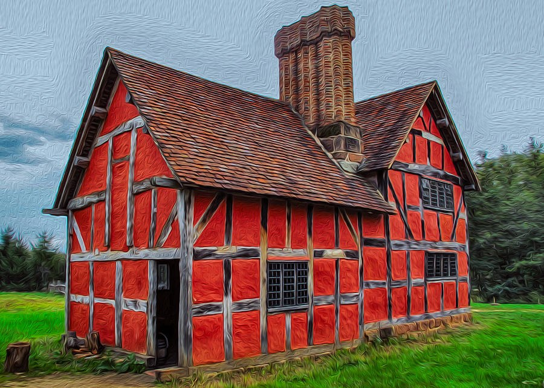
Ember Timbers - Red Half-Timbered Building with Tall Chimney Red Roof Reverie, Half-Timbered House The Quiet Cottage - Whitewashed Thatched Cottage Float Day, Tubers Drifting on a Blue River 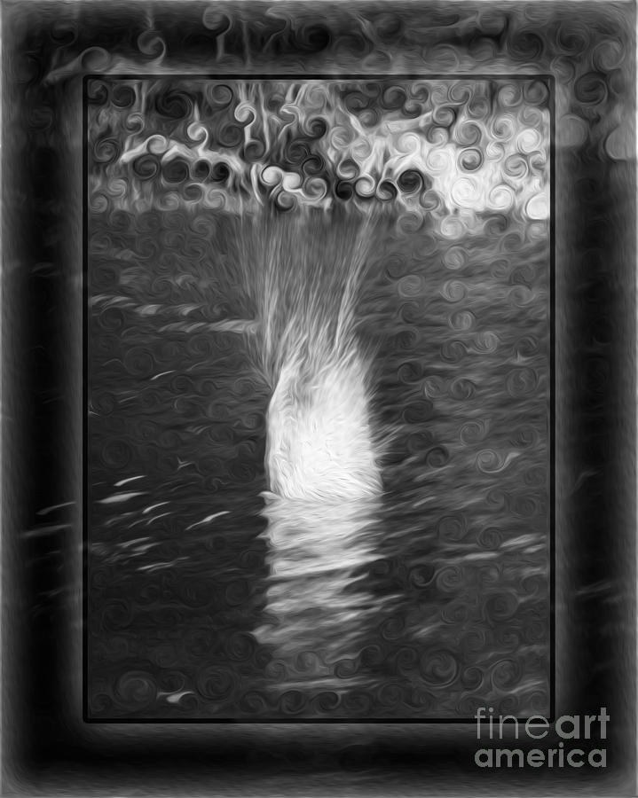
Rising Plume, Black and White Swirl Painting Ember Wings Butterfly on a Red Flower Emerald Window, Blue and Red Kaleidoscope Abstract Emberwing, Mirrored Abstract in Orange and Navy Curling Sky Over the Riverbank Three Red Chairs, Rustic Cabin Porch Gold on Cobalt: A Branch of Yellow Blossoms Wine and Gold, Bearded Iris Close-Up Red Hammock on the Porch by the River Yin Yang Window, Black Symbol Over Marbled Gold and Blue Silver Thumbprints, Black and White Water Abstract Open to the Sky: Roofless Log Cabin in Green Meadow Peace in Smoke - Black Peace Symbol on Red Shelter in the Pines, Log Pavilion Ember Mirror, Symmetrical Abstract in Orange and Violet Lantern Oval, Mirrored Abstract in Gold, Blue and Red Golden Valley Under a Swirling Sky Where the Snow Begins - Winter Mountain Valley Panorama Diamond Glow, Magenta and Gold Kaleidoscope Golden Whirlpools in Cobalt Blue Ember Window: Sunset Sky Over Evergreens The Waiting Chair, Cabin and Lupines Ember Drift, Red and Gold Fluid Abstract Luminous Starburst, White Flower from Above 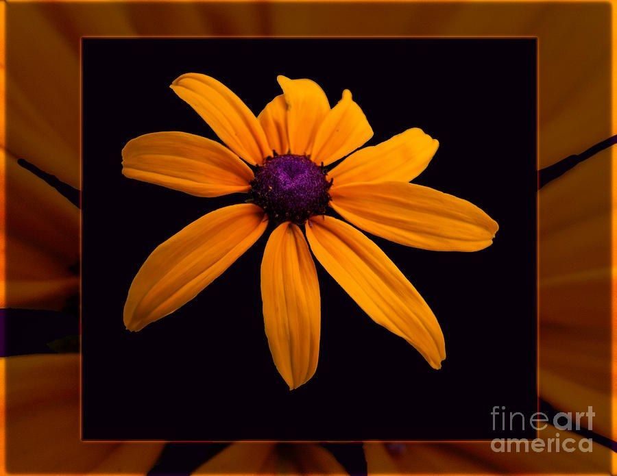
Ember Bloom, Orange Flower on Black Golden Whorl, Yellow Rose in Swirling Paint Texture 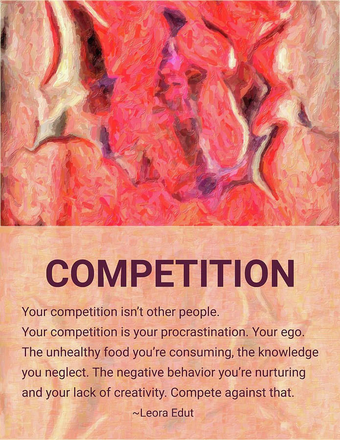
Coral Current, Red Abstract with Quote Panel Sunlit Emblem, Mirrored Abstract in Yellow and Green Ember Spirals, Red Abstract with White Linework Ember Leaf: White Linework Abstract in Rust and Teal Leaf Moon, Green Glass Sphere in a Glowing Ring Rain Drop - Blue Bubble Splash on Brown and Gold Swirls Root Dancer, Weathered Stump on Granite Ember Tide, Orange and Blue Swirling Abstract Swirled Stone Bloom, Pink Floral Relief 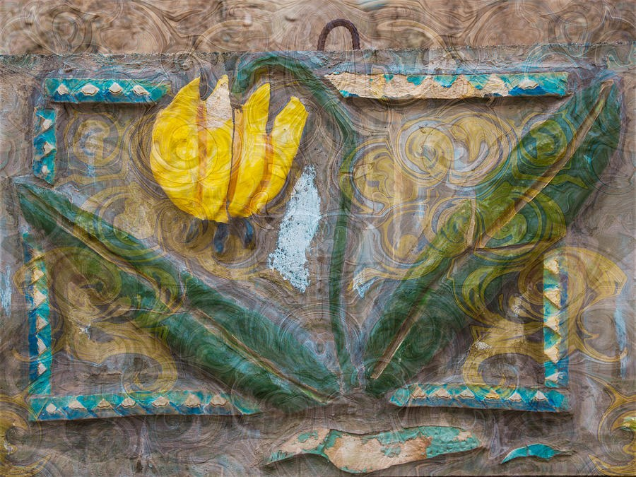
Rippled Tulip, Yellow Glazed Tile Relief Lavender Current - Purple Swirl Macro Abstract Silvered Wood Shore: Twisted Trees and Blue Ocean The Turning Current, Blue and Peach Fluid Abstract Ember Eyes - Mirrored Blue and Gold Rings on Red Cobalt Watcher - Abstract Blue Eye of Swirling Color Ember and Dusk, Glowing Orange Glass Abstract Lily Aglow - Golden Yellow Lily Tropical Glow in Blue and Green Electric Totem, Symmetrical Blue Swirl Abstract 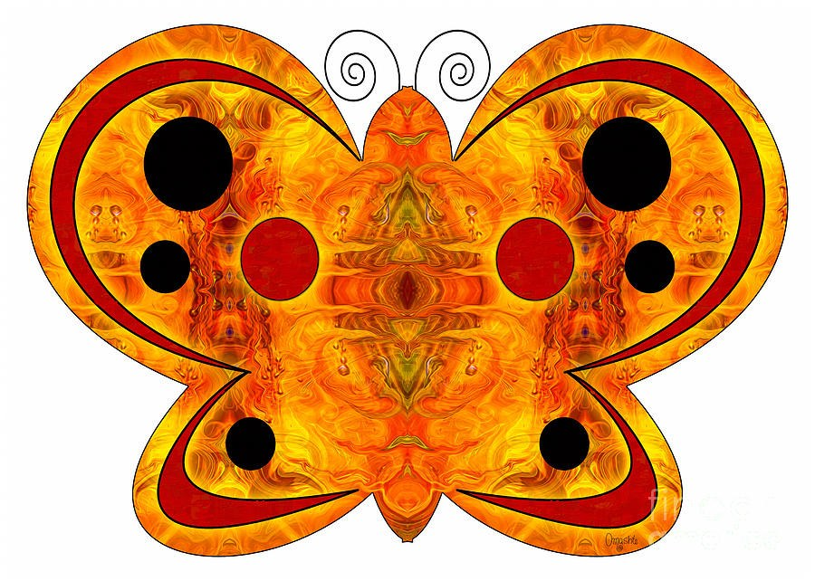
Ember Wings, Orange Butterfly Braver Than You Believe, Teal Quote in Stained-Glass Loops Still Daisies and Stirred Stone Ember Window, Glowing Orange and Blue Abstract Blue Chairs in the Clearing, Glass Table on a Wooden Deck Leaded Roses, Mirrored Red Blossoms Abstract Emerald Lotus, Marbled Green Chakra Emblem Marigold Mask, Mirrored Abstract in Green and Red 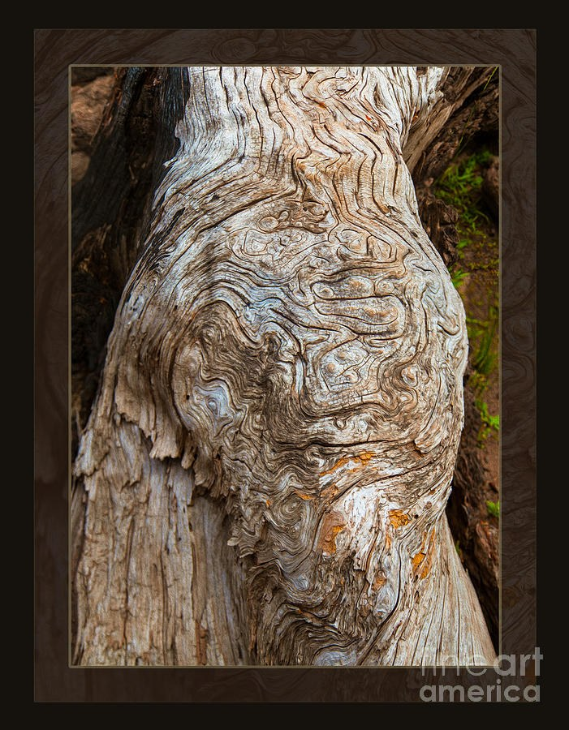
Contour Trunk - Swirling Grain in Weathered Wood Rivers of Wood, Weathered Stump and Roots Still Standing - Stump Reflected in Sunset Water 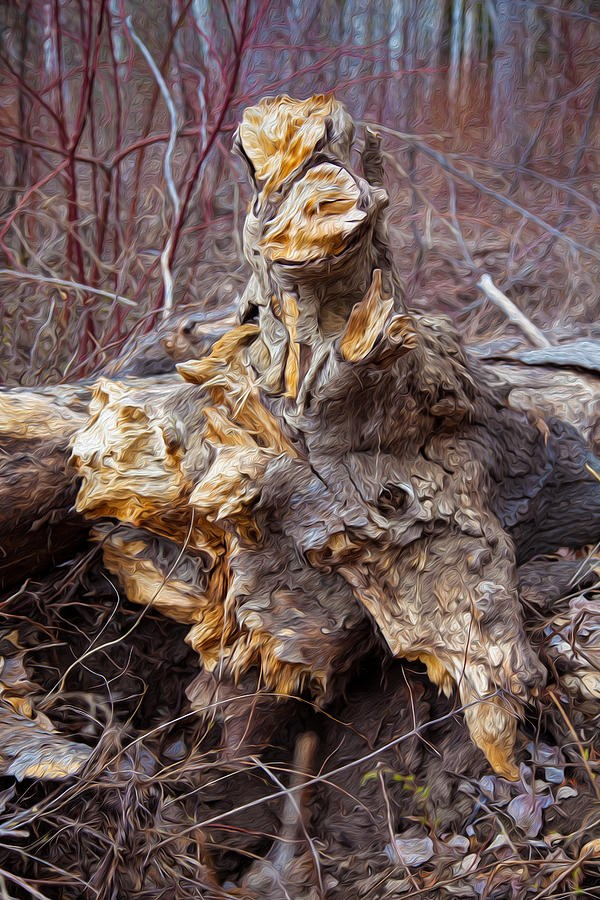
Golden Watcher - Weathered Tree Stump Cobalt Window in the Clouds Blue Ember Window - Swirling Blue and Orange Abstract Cutout of Color: Om Third Eye Symbol in Teal and Blue Red Among the Green: Half-Timbered Pond Reflection Amber Spiral, Close-Up Flower on Turquoise Aquarius Double Wave in Blue 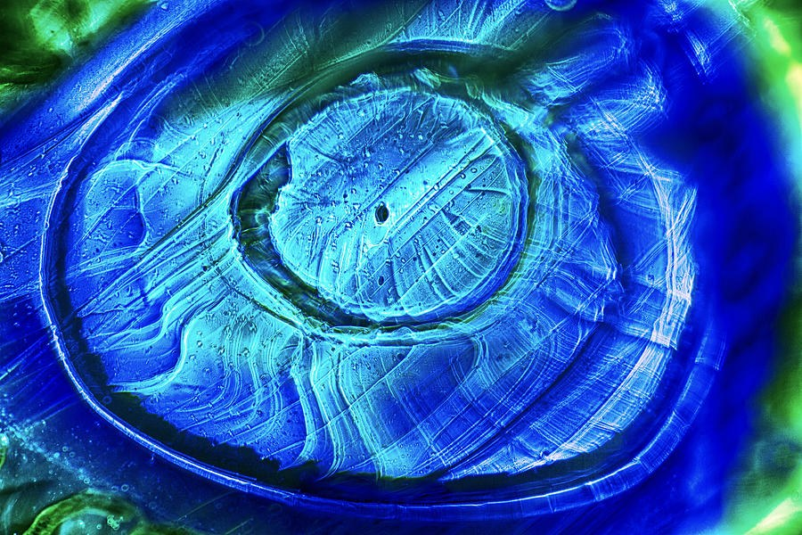
Blue Halo: Nested Ovals in Electric Blue 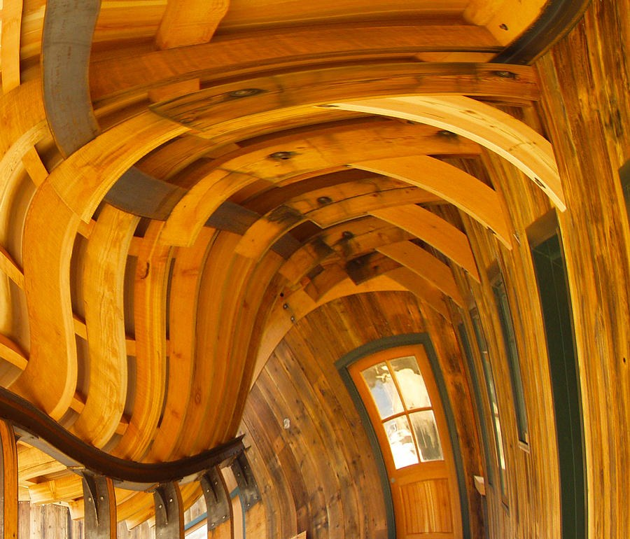
The Amber Bend, Curved Wooden Passage Aries in Gold - Ram's Horn Symbol in a White Oval Golden Wildflowers at the Tree Base Pale Grove, Aspens Along a Forest Trail Art, Curled: Ornate Red and Green Lettering Rust Against Blue, Valve Wheel and Water Dark Fork Among the Aspens Lantern in the Blue - Glowing Gold Swirl Abstract Electric Delta, Blue Channel Through Brown-Rimmed Ovals Ember Window, Glowing Orange Swirl in a Black Square Ember Pool, Blue Teardrop in Glowing Glass Two Watchers, Black and White Patterned Drawing Heart Window, Black and White Swirling Ribbons Ribbons and Pebbles, Black and White Swirl Drawing Hearts Along the Whirl: Black and White Striped Abstract Inward Pull, Black and White Spiral Tunnel Drawing Spiral Hollows, Black and White Line Abstract The Inward Fold, Black and White Line Art Eyes in the Current, Black and White Pattern Drawing Watchful Currents, Black and White Abstract Line Drawing Twist and Stripe: Black and White Op-Art Drawing Loop and Leaf, Black and White Abstract Drawing Heartbloom: Black and White Ink Ribbon Abstract Ribbons With Eyes: Black and White Abstract Drawing Coil and Drift, Black and White Looping Line Drawing Hearts in the Ripple, Black and White Drawing Golden Halo: Glowing Rings on Cobalt Blue Cobalt Dome and Ember Seam, Glossy Abstract Garnet Jewel, Symmetrical Red, Gold and Purple Abstract Twin Currents, Blue and Gold Symmetrical Abstract 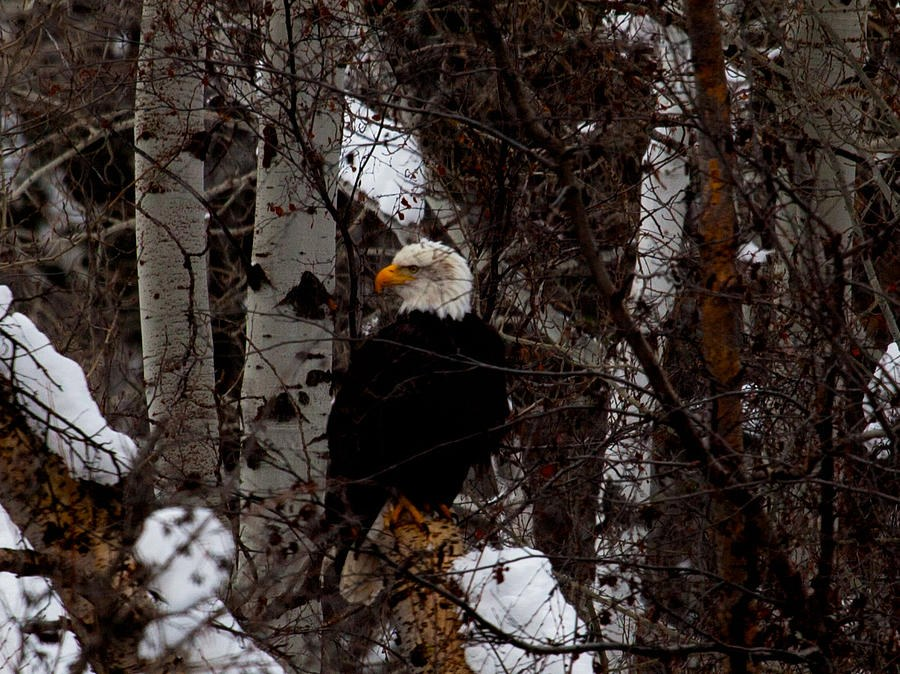
Half Hidden: Bald Eagle in Winter Branches 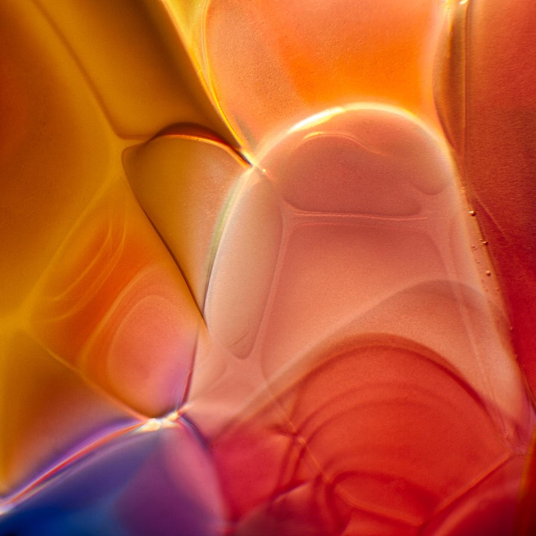
Ember Arcs, Glowing Abstract Macro The Gilded Seam, Pink and Peach Marbled Abstract Quiet Spring Below the Snow - Adobe House and Tipi 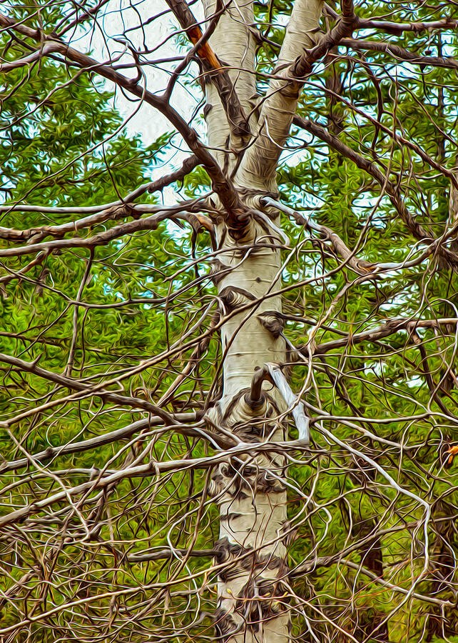
Still Center, Painterly Aspen Trunk Amber Lantern, Mirrored Glowing Oval 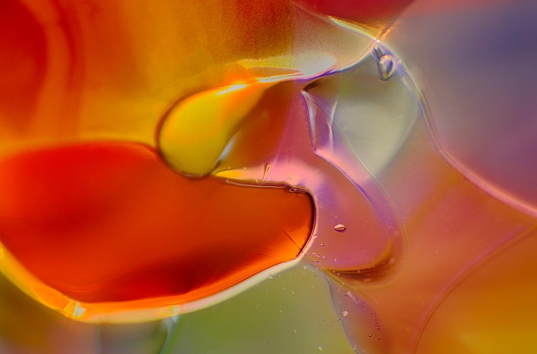
Ember Meets Orchid, Glowing Abstract Close-Up Blue Hour Cove, Rocky Coastline Along the Tide Line: Turquoise Beach and Thatched Pier 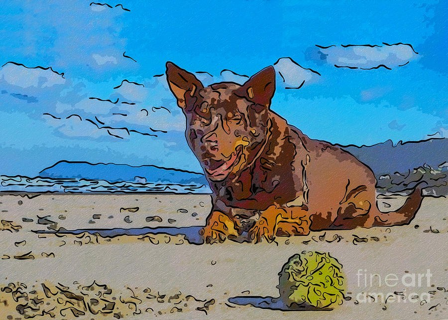
Sandy Smile, Dog and Green Ball on the Beach Caution Slippery, Blue Sea Beach Scene Sunlit Ruffles, Yellow and Burgundy Iris Sunset Oval - Gandhi Quote in Mirrored Red Ribbons Lovely Action, Green and Blue Quote Art Golden Pause, Bumblebee on Marigold 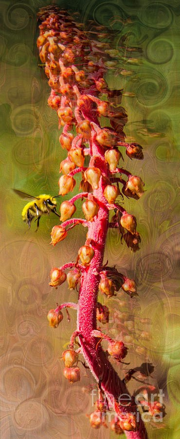
Quiet Hover, Bee and Red Flower Spike The Small Visitor - Blanket Flower on Gray-Blue Turning Petals - Black and White Line Drawing 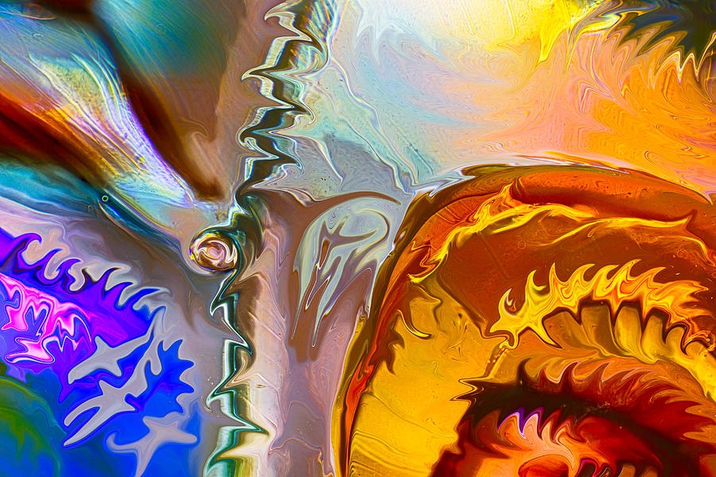
Ember and Tide, Orange and Blue Swirling Abstract Methow Valley Lake Reflections Skyward Pines, Sunlit Path First Leaves, Pale Trees in a Spring Meadow Ember Pools, Coral Cells on Turquoise Ember Tide, Blue Spirals Over Fiery Ripples Cobalt Drift, Glowing Amber Glass Abstract Ember Window, Glowing Yellow and Blue Abstract Cobalt Ember, Glass Close-Up Abstract Ember Seam, Amber Glass Abstract Turning Light, Black and White Spiral Abstract Hearts in a Row, Pink Bleeding Heart Flowers Ember Halo, Glowing Oval Kaleidoscope Slow Scrollwork - Mirrored Cobalt Blue Abstract Whirl of White, Bearded Iris Mirror and Whorl, Blue and Pink Abstract Ember Tide: Blue and Orange Swirling Abstract Stillness in the Swirl - Three Blue Birds Cobalt Curl, Blue Vase with Looping Green Stems 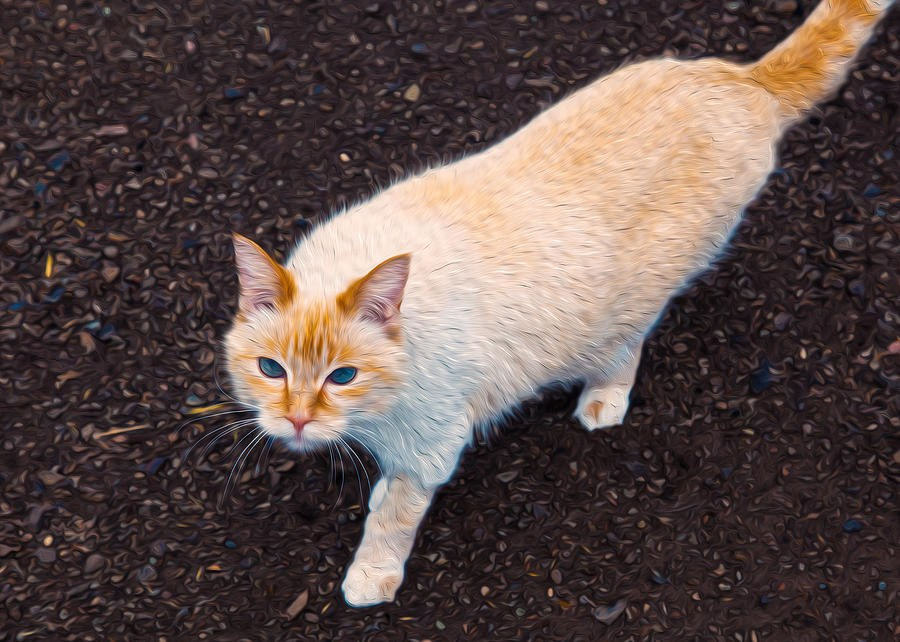
Eyes Up, Cream and Orange Cat on Dark Gravel Cobalt Hearth, Blue Orb Abstract Macro Mirrored Wings - Orange and Turquoise Kaleidoscope Abstract Teal Sentinel, Blue Bird in a Swirling Garden 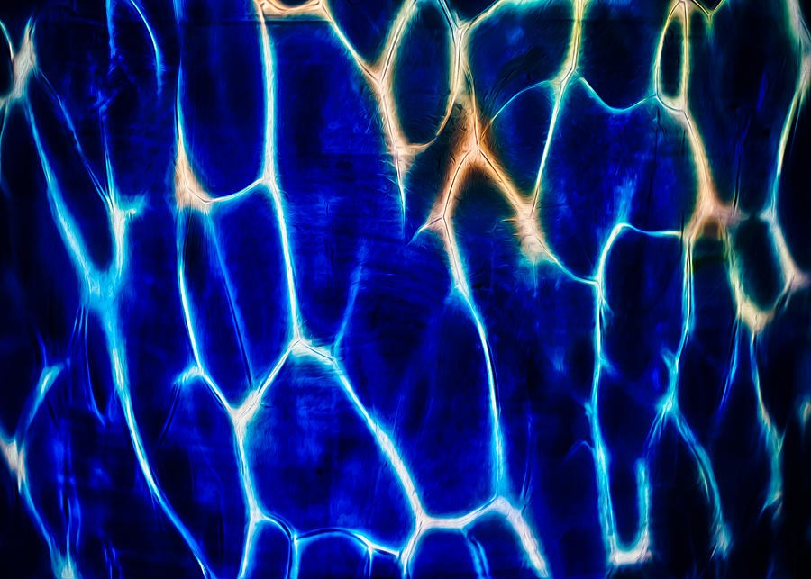
Cobalt Current, Glowing Blue Network Abstract Lone Bubble in Lavender Light, Abstract Macro Deep Current, Cobalt Blue Swirling Abstract 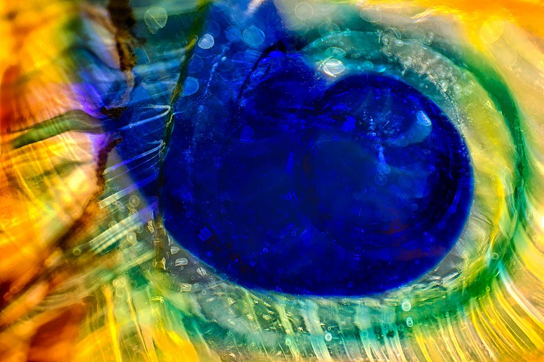
Blue Watcher, Cobalt Orb with a Golden Halo Marigold Quartet, Four-Way Spiral Abstract The Quiet Mooring, Panoramic Lake with a Small Boat Quiet Crossing, Lone Boat on Silver Water Rosewing, Red Kaleidoscope Butterfly 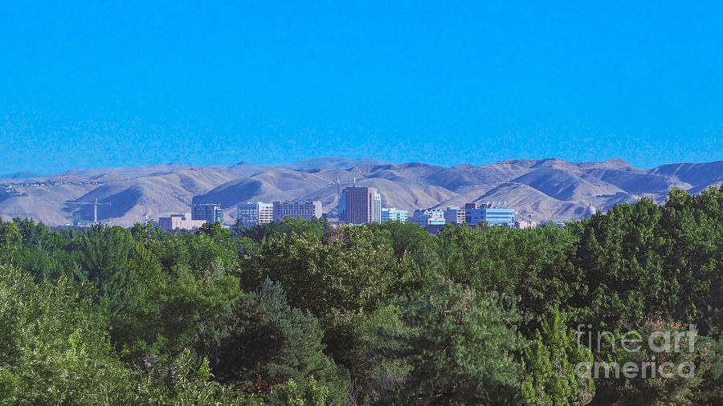
Between Hills and Leaves, Small City Skyline 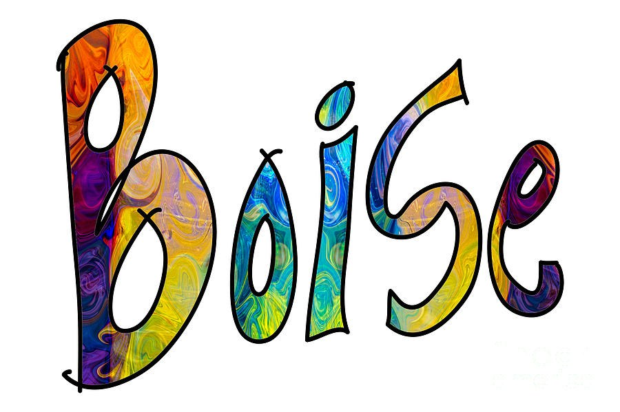
Boise in Swirling Color - Hand-Lettered Word Art Ember Window: Red and Yellow Kaleidoscope Scrolls Amber Eclipse - Symmetrical Gold and Black Abstract Red Heart, Blue Dome: Macro Glass Abstract Ember Seam, Red-Orange Abstract in Yellow and Peach Four Winged Heart, Blue and Red Kaleidoscope Abstract 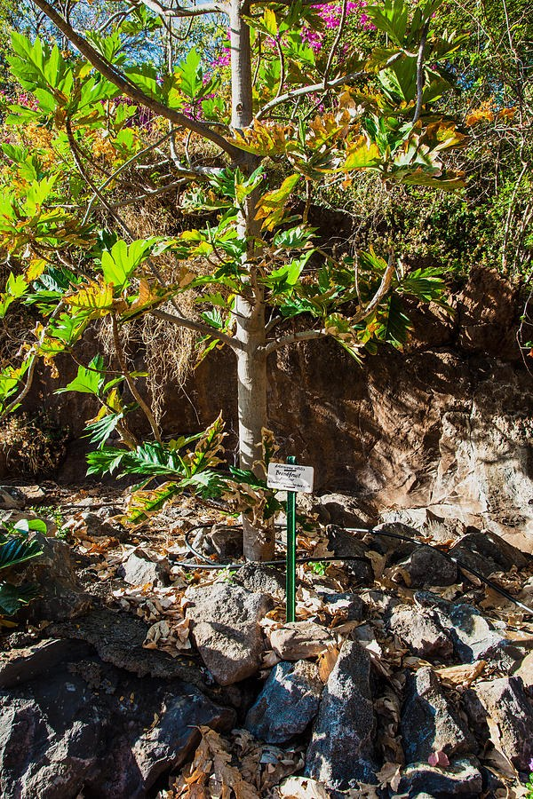
Lantern Leaves: Young Tree Against Rock Wall Nova Bloom, Magenta Starburst on Black Ember Window, Orange and Gold Flower Close-Up Berry Lanterns, Orange Berries Against Dark Electric Lace: Chartreuse Lichen on a Weathered Post 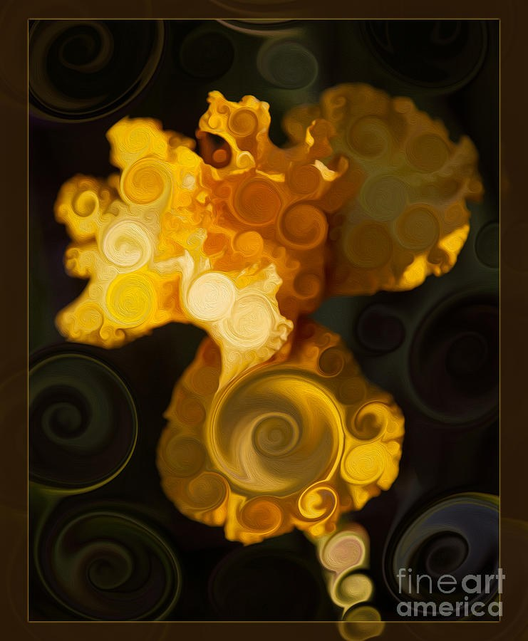
Golden Curls, Ruffled Yellow Flower 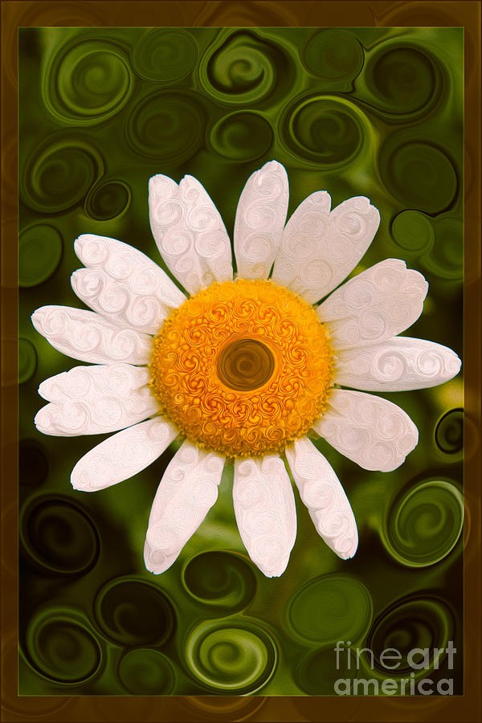
Swirl Daisy, White Flower on Green Spirals Midnight Tapestry - Blue Kaleidoscope Abstract Mirror Wings, Two Orange Butterflies in a Lilac Border Ember Wings - Mirrored Pink and Red Abstract Blue-Violet Street to the Hills Heart of the Whirl: Teal Spirals Between Navy and Flame The Red Seam, Mirrored Ovals on Royal Blue Ember Window, Kaleidoscope Oval in Orange and Blue Luminous Curl, Cream Swirls on Blue and Red Gold Window in Blue and Red Green Current, Glowing Filaments Around a Dark Center Glow Mask - Symmetrical Liquid Swirl Abstract Amber Drift, Glowing Glass Abstract Ember Swell, Red Glass Abstract Ember Bloom, Red Lily with Golden Throat Crimson Ember, Red Daylily with Water Droplets Ember Wings, Symmetrical Orange Butterfly in Lace Filigree Ember Wings, Symmetrical Butterfly Jeweled Filigree Wings, Gold and Blue Butterfly Ember Wings, Orange and Red Butterfly Summer Stillness, Swallowtail on a White Daisy 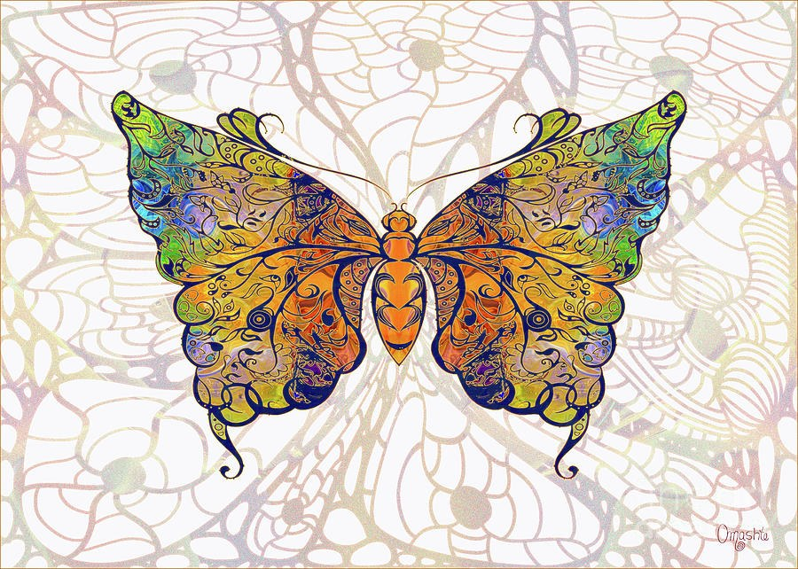
Filigree Wings, Ornate Golden Butterfly The Small Visitor - Blanket Flower with Bee Small Light, Crescent Moon in Navy Twilight Five Little Followers, Goslings on Blue Water Cancer in Crimson: Zodiac Glyph in a White Oval Capricorn in Blue - Zodiac Glyph in a White Oval Ember Iris, Golden Bloom Aglow in Darkness Ember Wings: Mirrored Red and Gold Abstract Pink Plume Over a Turquoise River Ember Glow, Translucent Red Glass Abstract Ember Folds in Red Glass 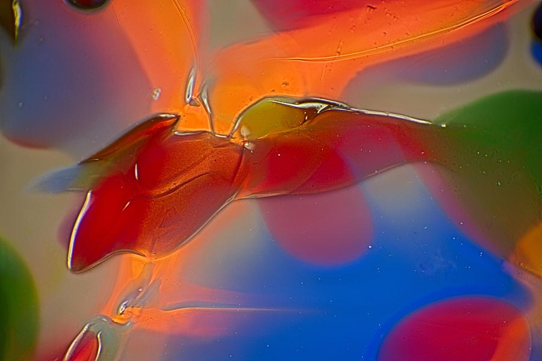
Ember Wing, Red and Blue Glass Abstract Ember Chalice, Mirrored Marbled Abstract Whirlpool and Flame, Tall Blue and Red Abstract Ember Current - Tall Abstract in Red, Gold and Blue Green Crossing, Red and White Glass Macro Amber Glow, Mirrored Spiral Abstract Blue Diamond Ember, Symmetrical Gold Abstract Orchid Window, Mirrored Magenta Loops Ember Crescents, Mirrored Abstract in Orange, Red and Gold Carnival Mirror - Magenta Kaleidoscope Oval Ember Window, Red and Yellow Swirling Abstract A Row of Hearts, Pink and White Bleeding Hearts Silver Sleeper - Driftwood in a Clear Stream Lavender Ruffles - Painterly Purple Iris Four Amber Windows, Mirrored Black and White Abstract 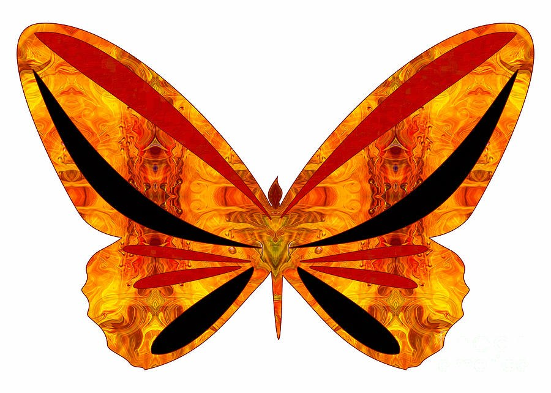
Ember Wings, Fiery Orange Butterfly Ember Wings, Two Orange Butterflies 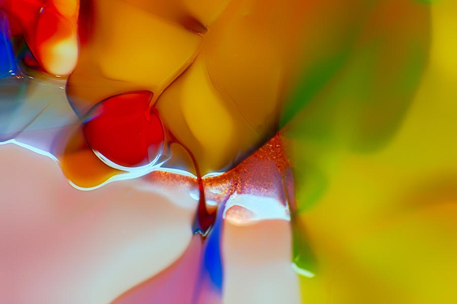
Ember Drop, Macro Abstract in Yellow and Red Watchful Four - Black and White Op Art with Red Ember Drift, Glowing Red Abstract Ember and Lilac Pools - Translucent Color Abstract Ember Lantern, Mirrored Red and Orange Abstract Lit From Within, Purple Stained Glass Abstract Cobalt Flame, Blue and Gold Mandala Golden Halo, Mirrored Kaleidoscope Abstract Thread of Light, Green and Yellow Abstract Macro Ember Tide - Glowing Blue-Rimmed Oval Through the Clear Water: Teal River Over Rocks Electric Lotus, Blue and White Mandala Crimson Bud, Glossy Red and Amber Abstract Veils Above, Painterly Clouds Over Evergreens Billow: Swirling Cumulus Clouds Over a Tree-Dotted Hill Methow Valley Cloud Tower at Dusk Blue Arch, Mirrored Swirling Abstract 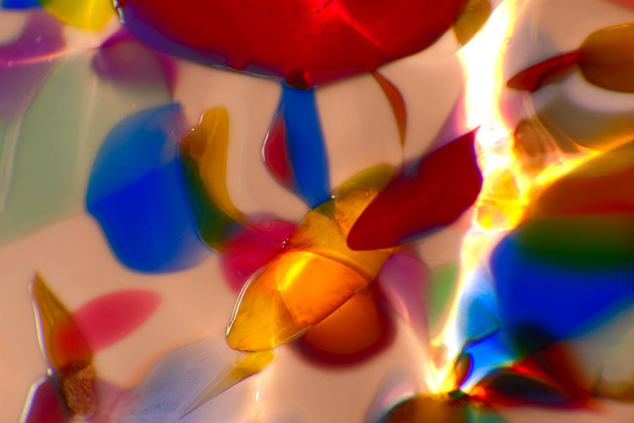
Jewel Light - Red, Blue and Amber Glass Abstract Collecting Old Trees, Flower and Ribbon in Swirled Grey Amber Seed, Close-Up of Green and Rust Glass Ruby Thaw: Red and Teal Glass Abstract 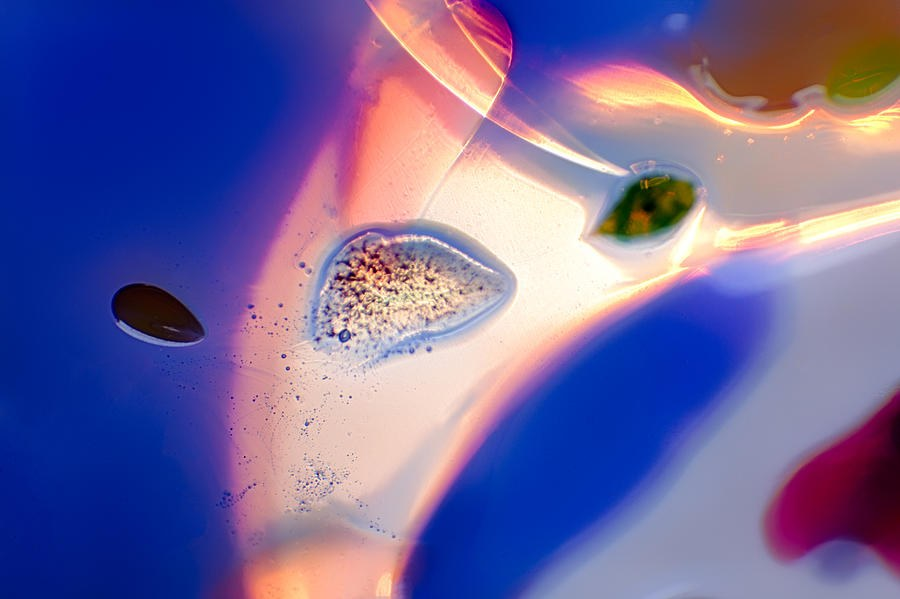
Small World Adrift, Cobalt and Orange Macro Abstract Ember and Cobalt, Abstract Glass Close-Up 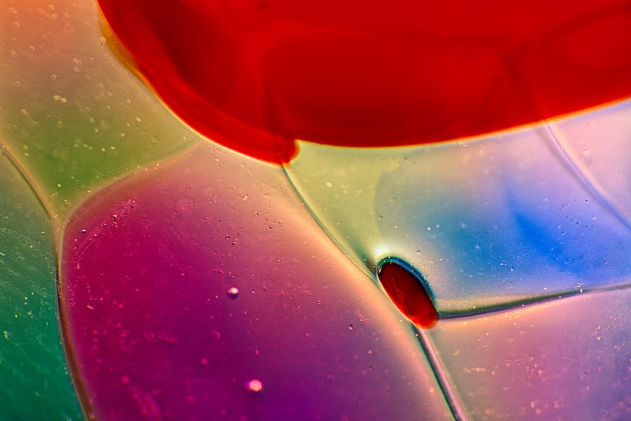
Crimson Canopy, Abstract Macro in Magenta and Green 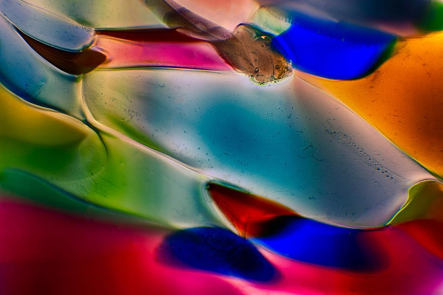
Teal Pool, Glowing Glass Close-Up Lantern Drift - Purple Teardrop Abstract Ember Current: Tall Blue and Orange Abstract Ember River, Flowing Abstract in Red, Gold and Blue Golden Dreams, Mirrored Ribbon Pattern Ember Heart - Mirrored Red Abstract Small Fires, Red and Yellow Blanket Flowers 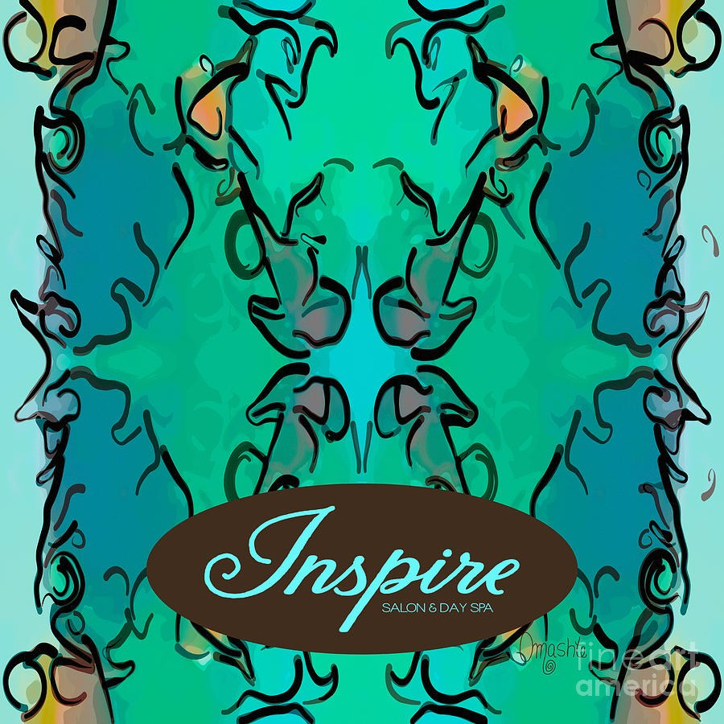
Inspire, Mirrored Black Linework on Teal Inspire, Spelled Out: Symmetrical Blue, Red and Yellow Abstract Marbled Wings, Moon Phase Butterfly Cobalt Eclipse, Swirling Blue and Orange Abstract Amber Lantern, Abstract Glass Close-Up Ember Feathers: Red Arch Over Deep Blue Ember Script: Blue and Amber Swirl Abstract Ember Cells, Red and Orange Abstract Macro Ember Heart in a Leaf Wreath Slow Embers, Glowing Orange Macro Abstract Ember Pools - Glowing Orange Abstract Ember Drop - Red Teardrop Glass Abstract Golden Windows, Mirrored Scroll Abstract Golden Lantern, Solar Plexus Chakra Symbol 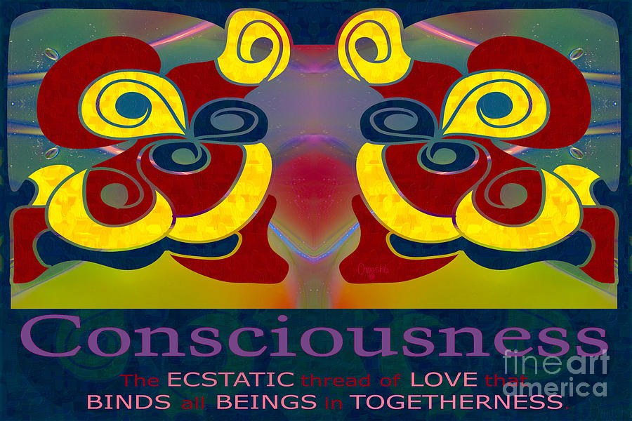
Consciousness, Mirrored Red and Yellow Spirals Radical Difference, Amber and Gold Quote Art Two Lights Adrift - Cobalt Blue Fluid Abstract Small Crown: Stone Cairn with Red Seed Pod The Quiet Pair - White Stones on Dark Volcanic Rock Jeweled Emblem, Mirrored Blue Swirl Oval Eye of the Current - Blue Swirl Abstract Ember Glow, Mirrored Swirls in Blue and Orange Crimson Lantern, Mirrored Abstract in Red and Yellow Amber Current - Blue and Gold Vertical Abstract Ember Cabin Under Blue Sky Lights On at Dusk, Wood Cabin Among Tall Trees Lupine Doorstep, Timber Cabin in a Purple Meadow Cottonwood Cottage Methow Valley Landscape Into the Purple: Stone Garden Path and Violet Flowers 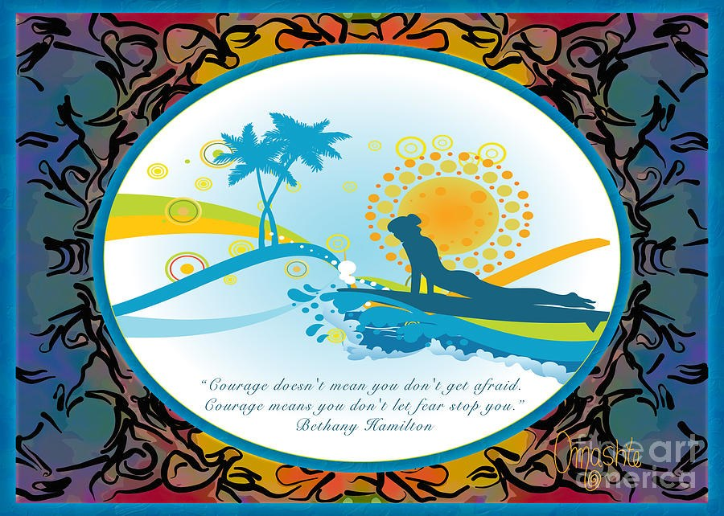
Dotted Sun Cobra, Yoga Pose on a Wave Ember Petals, Yellow Flower on Navy Blue Ember Bloom, Mirrored Orange Flower Ember Totem, Symmetrical Orange and Red Abstract Ideas Inspire Change, Turquoise Stained-Glass Quote 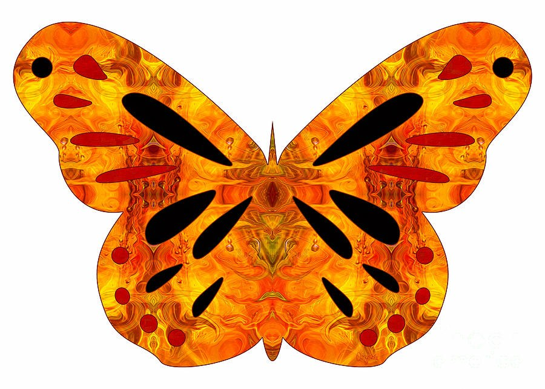
Ember Wings, Orange and Red Butterfly Ember Spiral Rose in Stained Glass Pattern 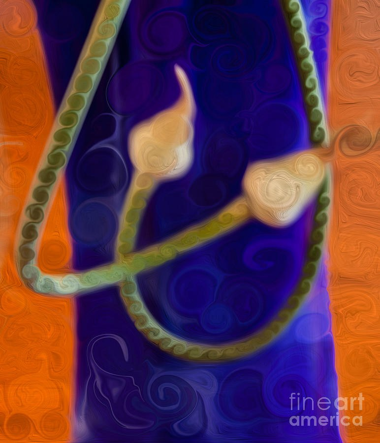
Held in Blue: Cream Buds Between Orange Bands Midnight Om Lotus Mandala 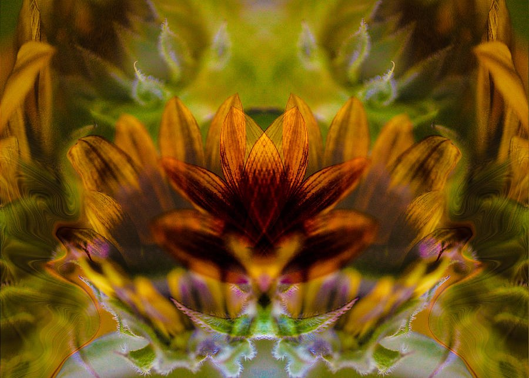
Golden Crown, Mirrored Flower in Rust and Gold Periwinkle and Velvet, Painterly Purple Iris Two Blooms in the Current, Swirled Grey-Blue Floral 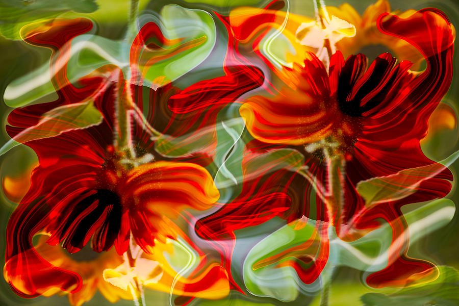
Ember Ripple, Red and Orange Flowers Ruffled Tide, Turquoise and Red Fluid Abstract Ember Constellation, Glowing Stars in Red and Green Liquid Color Quiet Starburst, Glowing Seed Head on Black Ember and Dusk, Glowing Abstract in Amber and Violet Methow River Boy - Painterly Landscape Held by a Blue Line, Gold and Violet Abstract Still Point: Blue Triangle Symbol in a White Circle Velvet Grain: A Field of Deep Red Facing Embers - Mirrored Orange and Red Abstract Jewel Drift - Tall Liquid Abstract in Red, Blue and Green Ember Window, Orange Gerbera Daisy Crimson Petal - Red Glass Close-Up Ember Mirror: Symmetrical Red Abstract Ember Star - Symmetrical Kaleidoscope Abstract Sixteen Petals, Blue Marbled Mandala Electric Column, Symmetrical Blue and Yellow Abstract Cobalt Ember, Mirrored Red Flame Abstract Ember Wings, Symmetrical Red and Teal Abstract 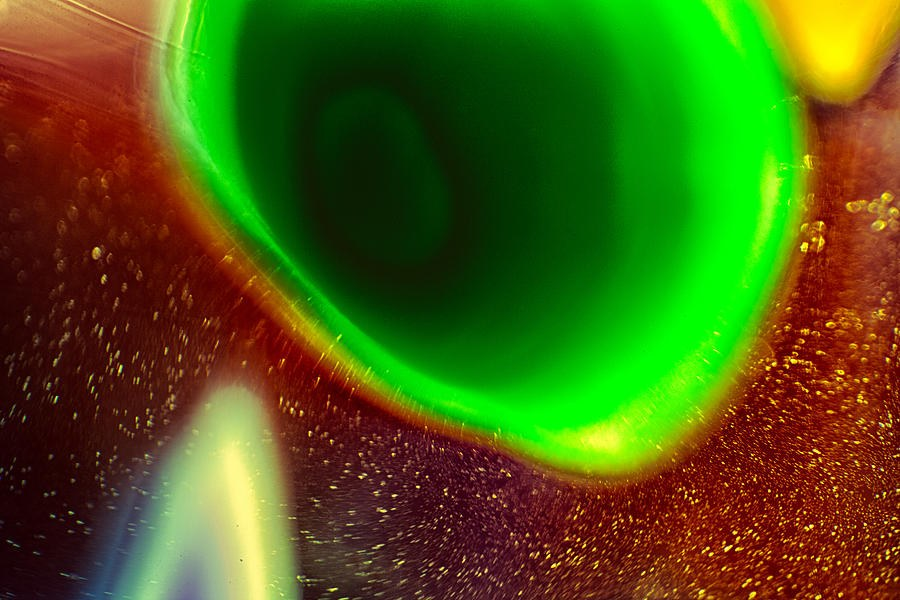
Green Portal, Glowing Abstract in Rust Brown The Watcher in Blue, Liquid Swirl Abstract Ember Totem, Mirrored Red-Orange Abstract 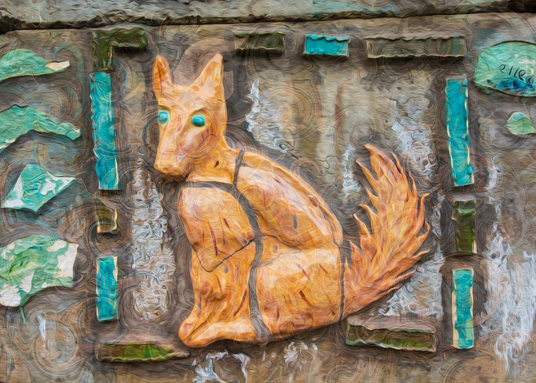
Ember Tail - Orange Animal Relief in Teal Tile Blue Marble Fortune, Gold Dollar Sign Patchwork Leap, Stylized Dolphin in Navy and Red One Small Bubble - Cobalt Blue Glass Abstract 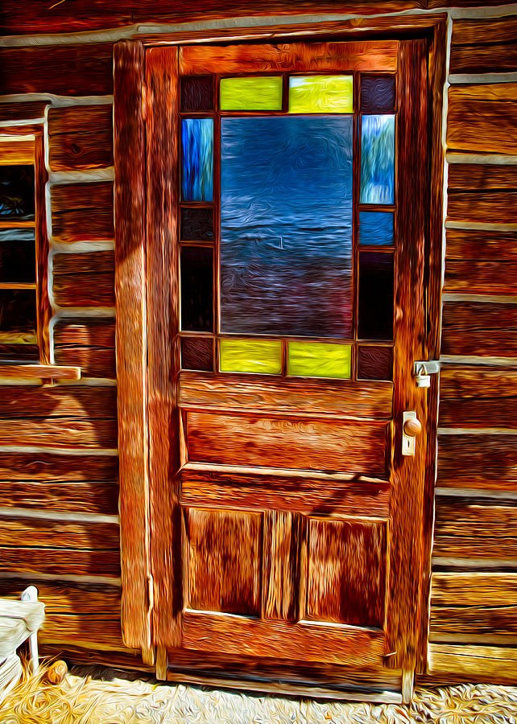
Ember Door, Blue Glass in a Log Cabin Wall Ruby Ember Current, Glowing Glass Abstract Turquoise Crossing, Mirrored Abstract Blue Crossing: Mirrored Stained Glass Style Abstract Ember Window: Orange and Blue Stained-Glass Style Abstract Ember Above the Haze, Blanket Flower Magenta Quartet, Mirrored Pink and Lavender Abstract Green Corridor - Forest Trail Through Pale Trunks Lit From Within, Mirrored Jewel-Tone Abstract Ember Lens - Glowing Red and Purple Abstract Macro Blue Lens, Violet Orb in Nested Arches Lantern Bud, Pink Flower and Blue Glass Vase Solitude at Patterson Lake Evening Mirror - Pond at Dusk Earth Day Bloom - Marbled Blue Lettering on Orange Spectrum Eye - Iridescent Glass Sphere Amber Lantern, Mirrored Gold and Brown Abstract Amber Spiral, Stained Glass Style Rose Ember Eclipse, Symmetrical Orange and Black Abstract Earth Day, Marbled Letters on Orange Rust and Lime, Lily Stamens Close-Up Quiet Starburst, White Coneflower Close-Up Ember Coneflowers and Lilac Blooms Satin Tide, Iridescent Blue and Teal Abstract Ember Window, Navy Rings Mirror Abstract Amber Lantern, Glowing Oval in Purple and Red Ember Window, Mirrored Orange Abstract Molten Eye, Orange and Navy Abstract Ember Seam - Mirrored Crimson Swirl Abstract Emerald Lantern, Glowing Green and Coral Abstract Ember Window, Swirling Green and Gold Abstract Ember Ovals, Speckled Forms in Molten Gold The Open Circle, Red and Violet Star Mandala Navy Eddy - Blue Fan Form in Swirling Paint Ember and Emerald, Flowing Abstract in Red and Green Ribbon Blaze - Glossy Swirls in Red, Gold and Blue 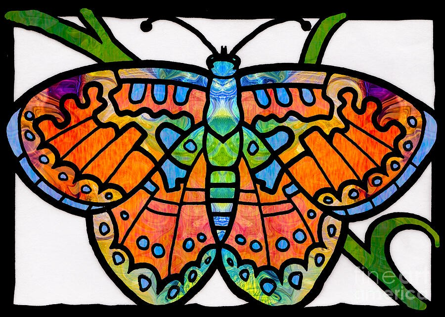
Glowing Orange Wings, Stained Glass Style Butterfly Four-Way Window: Maroon and Green Mirrored Abstract The Two Watchers, Mirrored Swirl Abstract Spectrum Walk, Seven Chakra Symbols Ember Mask, Symmetrical Flame Abstract Mirrored Embers, Symmetrical Orange and Red Abstract Sunlit Emblem, Golden Triangle and Petal Ring Amber Lantern, Mirrored Abstract in Orange, Blue and Purple Ember Bloom: Orange and Turquoise Kaleidoscope Ember Window, Orange and Red Mirrored Scroll Abstract Ember Star - Mirrored Red and Orange Medallion on Blue Ember Lily, Glowing Orange-Yellow Lily Cobalt Swan - Blue and Gold Glass Abstract Ember Bloom, Symmetrical Abstract in Orange and Green Mirrored Ember, Symmetrical Flame Abstract Ember Ripple, Radiating Ovals on Black Ethan's Anchor, Red Name Art Amber Ruffles - Bearded Iris with Pink Quote Panel Cobalt Canopy - Blossoms Against Blue Sky The Pond Keeps the Sky - Pines and Peach Clouds Ember Windows, Black Ribbon Abstract Ember Wing - Kaleidoscope Flame Abstract Amber Mask, Kaleidoscope Abstract in Gold and Brown Ember Lotus - Red and Orange Mandala Ember Window, Four Mirrored Scrolls Green Star, Mirrored Swirl Kaleidoscope Bend in the Path, White-Barked Trees in Spring Green Golden Mosaic, Sunlit Water Over Blue Stones 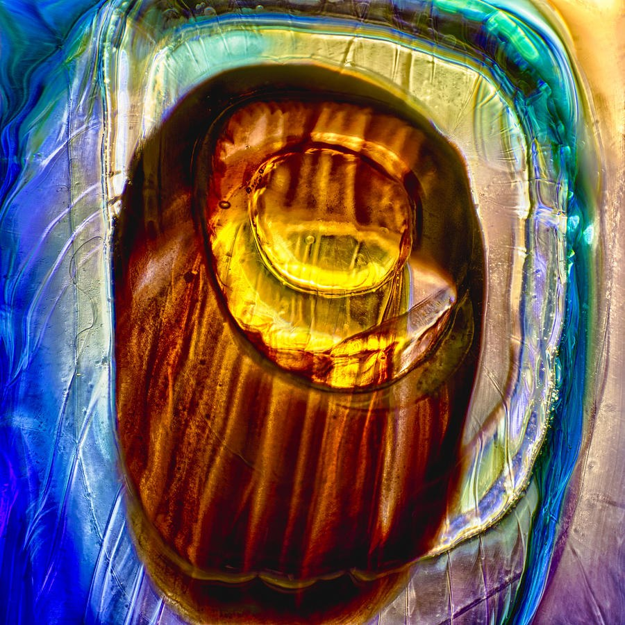
Ember Eye, Amber and Blue Glass Abstract Cobalt Vortex, Glass Close-Up Jewel Eye Vortex, Cobalt Blue Abstract Ember Seam, Glowing Red and Teal Abstract Twin Embers, Mirrored Orange and Red Abstract Indigo Eye, Iridescent Glass Orb Held in Pink, Macro Abstract in Green and Red Quiet Lantern, Glowing Mosaic Diamond on Black Ice Meets Ember - Blue and Orange Swirl Abstract Four Embers, Mirrored Spiral Abstract in Purple and Red Mirror Masks, Blue and Orange Symmetrical Abstract Midnight Medallions: Mirrored Swirl Abstract 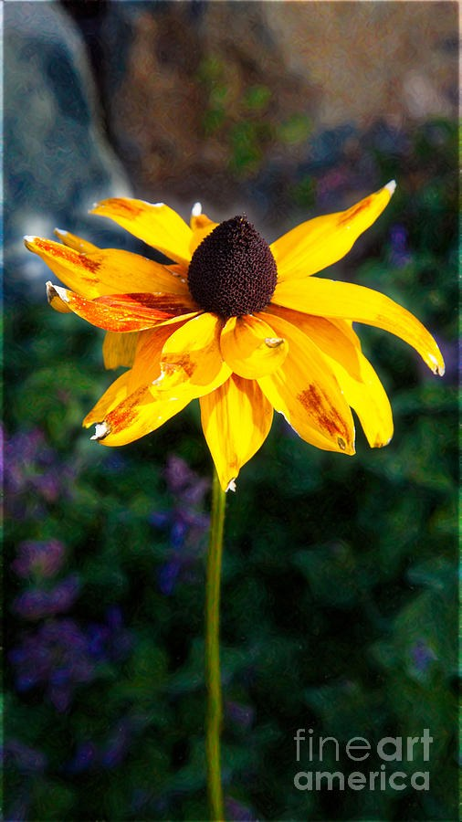
Rust and Gold, Black-Eyed Susan Close-Up Winged Blue Light, Tall Mirrored Abstract Ember Current, Orange and Amber Swirls 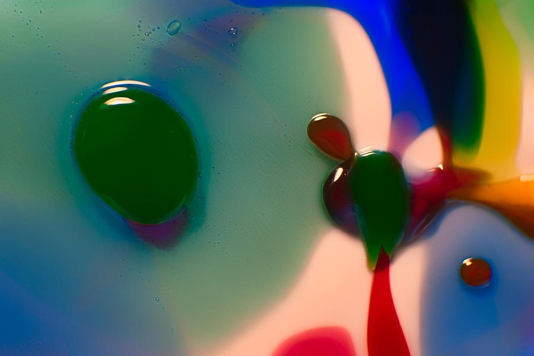
Green Bead, Red Drip: Macro Abstract Ember Diamond, Mirrored Red Abstract Ember Wings, Red and Blue Kaleidoscope Heart of Light, Rainbow Sunburst Heart on Black Ember Totem, Mirrored Orange and Red Abstract Masked Wings, Folk Art Butterfly in Orange and Green Ember Axis, Symmetrical Red Abstract Ember Mask - Mirrored Orange and Green Abstract Ember Wings, Mirrored Red and Yellow Abstract Cobalt Whorl: Blue Figure with Purple Spiral Red Figure on Methow Valley Bridge Ember Mirror, Symmetrical Orange Abstract Ember Wings, Black Butterfly on Amber 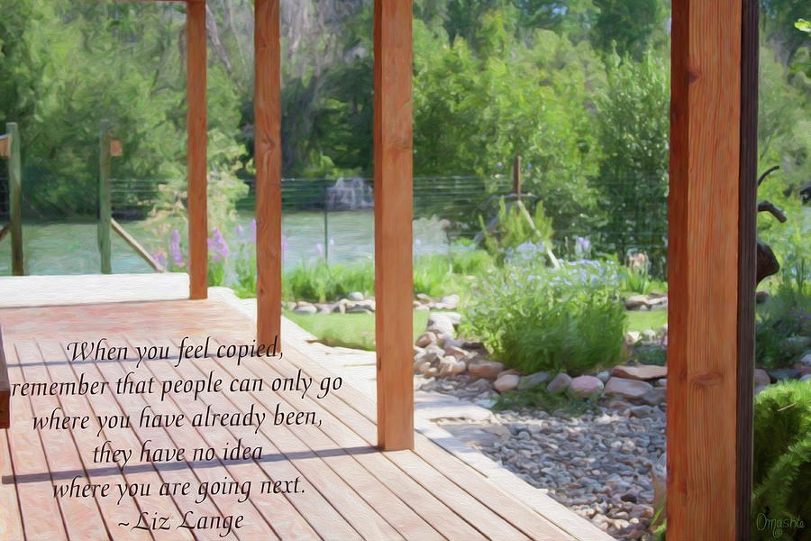
Where You Are Going Next - Porch, Garden and River Lanterns in the Leaves, Pink and Orange Flower Study Magenta Mirrorwork, Symmetrical Pink Abstract Blue Diamond Seam - Mirrored Bare Trees Cobalt Ember, Glowing Blue and Amber Abstract Ember Lotus Mandala in Red and Orange Gilded Current, Rippled Gold Abstract Ember Tide, Rust Form in Swirling Blue and Gold Ember Tide, Swirling Orange and Blue Abstract Ember Mirror: Orange and Teal Mandala on Navy Ember Window, Red and Black Stained-Glass Style Abstract The Indigo Pool: Mirrored Gold Spiral Abstract Ember Wings, Orange Butterfly in a Blue Oval 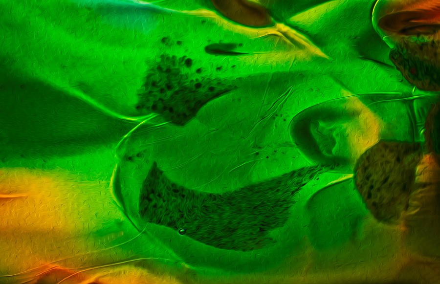
Crescent Drift, Luminous Green Abstract Even One Voice - Cream-Edged Green Leaves Better to Speak, Quote on a Garden Stone Ember Tide, Swirling Fluid Abstract in Red and Green Rising Ember: Red and Orange Glass Abstract Ember Medallion, Symmetrical Orange Abstract Ember Lantern, Glowing Orange Abstract with Bubbles Ruby Drip: Glowing Translucent Color Abstract Ember and Tide: Rainbow Drip Abstract Blue Into Red, Glowing Abstract Whirling Blooms, White Spiral Flowers on Dark Green 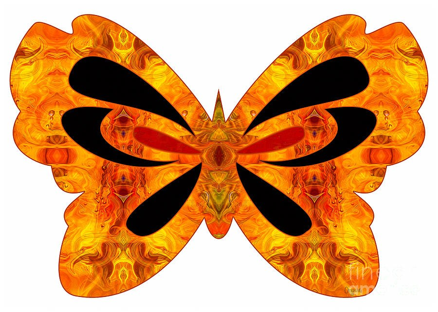
Ember Wings, Flame Swirl Butterfly Ember Tide, Fluid Abstract in Blue and Orange Ember Heart, Swirled Amber Flame Ember Wings, Red and Orange Butterfly Ember Seam, Glowing Orange Macro Abstract Float Like a Butterfly: Swallowtail on Pink Blossoms Eye of the Swirl, Pink Flower Molten Arc, Swirling Fluid Abstract in Blue and Orange Ember Wings - Orange and Blue Fluid Abstract Bloom Masquerade - Mirrored Flower Abstract Lantern Cells, Glowing Orange Abstract Ember Mask - Mirrored Red and Olive Abstract Cobalt Lattice - Flower of Life Oval Petal Ribbons, Soft-Focus Pink and Coral Flower Ember Bloom, Orange and Red Marbled Flower Amber Mirror, Glowing Orange Oval Abstract Red Quartet - Mirrored Flowers in Red and Black Jewel Pool, Glowing Translucent Abstract Silver Log Bend - Clear River Through Pine Forest Three Lanterns, Mirrored Swirl Abstract Gilded Shallows, Clear Water Over Pebbles Across the Ribbon, Blue and Orange Fluid Abstract Ember Mask - Mirrored Orange and Navy Abstract Indigo Ember Current, Fluid Abstract Ember Bloom, Red and Gold Flower Ember Wings - Gold and Red Dragonfly Midnight Wing, Marbled Butterfly Silhouette Weight of Clouds, Snow-Dusted Ridge Panorama Tangerine Wings, Orange Butterfly with Purple Blooms Column of Light and Shadow, Cloud Over a Mountain Ridge Golden Current: Fluid Abstract in Yellow and Cobalt Two Suns in the Swirl, Orange Flowers on Blue-Grey Slow Citrus Glow, Green and Orange Abstract Ember Bubble, Red Glass Macro Orange Ribbon Frame, Blue Teal Marbled Abstract Under the Big Mountain, Timber Lodge and Pond Ember Bloom, Red and Gold Flower on Black Golden Spotlight, Black-Eyed Susan Where Ember Meets Lavender, Fluid Abstract The Visitor, White Daisy Close-Up Crimson Quartet - Mirrored Floral Pattern Golden Keyholes, Mirrored Amber Abstract Ember in the Green: Orange Teardrop Abstract Lantern Irises, Yellow Bearded Iris Ember Lantern: Glowing Amber Oval in Burgundy and Blue Ember Current, Orange and Red Swirls Over Blue Amber Crossing, Glowing Glass Abstract Lilac Masquerade, Mirrored Abstract Golden Thread, Jewel-Toned Abstract Close-Up Magenta Quartet: Four Mirrored Shapes Midnight Orchid, Magenta Butterfly on Black Green Lace Bloom - Mirrored Pink Flower Cobalt Window: Symmetrical Blue Abstract Storybook Row, Painted Garden Posts Sunmask, Mirrored Yellow Flowers Sunlit Wings, Yellow Butterfly in a Green Border Gemini Ember - Red Zodiac Symbol in a White Oval Almond Glow: Mirrored Pink Forms on Cobalt Blue Ember Whirl: Red and Teal Liquid Spirals Honey Light and the Spinning Wheel Ember Currents, Swirling Abstract in Orange and Gold Slow Current, Olive and Magenta Abstract Ember Bloom, Glowing Orange Flower Green Drifter, Glossy Fluid Abstract Lantern Cells, Glowing Orange and Magenta Macro Abstract Lantern Eye: Indigo Vortex Abstract Ember Light, Yellow and Red Glass Abstract Ember Lace, Red Layers Beside Green Ember Garden - Red Starburst Abstract Gold-Hearted Bloom, White Flower on Swirling Green Amber Horn, Glowing Abstract in Amber and Olive Lantern Bloom: Lime and Gold Petal Fan on Black Crimson Emblem - Mirrored Red and White Abstract Rooted in Red, Triangle Emblem on a White Disc Golden Spiral, Yellow Flower Bud Macro Green Spark in Amber Glass Spun Gold Lily, Swirled Yellow Bloom on Green Amber Watchers, Blue Spiral Abstract Sunlit Filigree, Mirrored Golden Abstract Amber Lanterns - Gold Mirrored Abstract Molten Totem, Mirrored Abstract in Olive and Red Risk the Unusual, Golden Quote Oval in Orange and Red Golden Flicker, Yellow Textured Abstract Open Face, Yellow Flower in Soft Light Ember Seam, Mirrored Red Spirals Ember Stone, Golden Rock Beneath Rippling Water Golden Thank You with Heart Flower Ember Dome: Glowing Golden Swirl Abstract Willow in Gold, Weeping Willow Under Deep Blue Sky Ember Oval - Golden Mirrored Abstract Smoke and Ember, Mirrored Orange Coneflower Grace - Green and Gold Mirrored Abstract on Navy Embers in Gray, Blanket Flowers Hearth Light, Mirrored Abstract in Orange and Rust Small Worlds in Violet, Macro of Glass Spheres Small Worlds in Blue Glass Mirror Masks, Symmetrical Blue and Orange Abstract Ember Window - Mirrored Orange and Blue Abstract Ember Totem: Mirrored Turquoise Abstract in Red-Orange Amber Totem, Mirrored Orange Abstract Green Moon, Red Rivers - Abstract Glass Macro Gold Within Green, Abstract Macro in Olive and Purple Orange Eyes in the Green, Mirrored Kaleidoscope Abstract Peace in Bloom, Red Stained Glass Flowers Petal Wings, Mirrored Pink Abstract Held Blue, Cobalt Window in Amber Glass Twin Embers, Mirrored Orange and Red Abstract Violet Lanterns, Mirrored Purple Abstract Cobalt Echo - Concentric Water Ripples Becomes: Driftwood in Amber Water Cloud, Glowing Blue Lettering on Mirrored Swirls Doug in Blue and Copper, Birthday Name Art Happy Birthday Jessica, Marbled Rainbow Heart Three Chicks and a Flower Egg, Happy Easter Jewel Box Happy Holidays, Marbled Red and Green Lettering Ribbons and Watchers - Black and White Abstract Cobalt and Gold Shore - Curving Beach Landscape Beside the Weathered Trunk, Pink Blossoms Ember Window, Abstract Glass in Orange and Blue Ember Tide, Amber and Violet Liquid Abstract Cobalt Starbloom, Blue Abstract on Glowing Gold Violet Rush, Glowing Ribbed Abstract Heart of Scrolls: Symmetrical Heart in Red and Mustard Lacework Heart - Symmetrical Blue and Gold Pattern Ember Heart - Mirrored Red and Green Abstract Ember Heart, Mirrored Orange and Red Abstract Joy, With a Heart in the J Ember Core: Red-Orange Abstract Macro Ember Heart, Glowing Red and Purple Abstract Ember Current - Red and Yellow Glass-Like Swirls Ember Hearts - Swirling Abstract in Red and Purple Ember Wings - Mirrored Red and Orange Abstract Mirrored Lantern, Golden Symmetrical Abstract Crescent Bloom - Magenta Kaleidoscope Abstract Ember Bloom Kaleidoscope in Orange and Pink Dusk Wings, Mirrored Abstract in Amber and Gray Quiet Lanterns: White Flowers on Deep Green Ember Jewel, Mirrored Orange and Blue Abstract Amber Lantern, Glowing Abstract with Molten Blue Border Lantern Bloom, Glowing Red Flower Crimson Crossroads, Mirrored Red and White Abstract Ember Wings, White Butterfly on Red Ember Column, Orange and Violet Fluid Abstract Amber Teardrop Glow, Violet and Magenta Abstract Crimson Spirals, Red and Blue Fluid Abstract Ember Hollows, Mossy Tree Trunk Ember Fan: Trumpet Flowers in Swirls Eye of the Current, Orange Swirl on Turquoise Framed Glow: Translucent Circles in Teal and Red Hope in Jewel Colors, Hand-Lettered Word Art Jewel Totem, Mirrored Stained Glass Abstract Ember Rosette: Golden Line Flower in a Glowing Oval Hope, Marbled Jewel-Tone Word Art Reaching Copper, New Shoot on a Wire-Wrapped Post Blue Over Yellow: Three Horses on a Wildflower Hillside Ember Web - Red and Yellow Glass Abstract Small Wonder, Hot Air Balloon in a Cloud Frame One Small Drift: Hot Air Balloon Above Snowy Mountains Ember and Indigo, Glowing Glass Abstract Crimson Among the Grasses: Red Flowering Shrubs on a Rocky Hillside Heart of the Lily, Pink Floral Close-Up Ruffled Pink Blossoms Against a Cobalt Sky Crimson Convergence, Mirrored Red and Navy Abstract Crimson Totem, Mirrored Red and White Abstract Improvement Begins With I, Blue Mirrored Scroll Abstract Scarlet Crossing, Red Glass Abstract Held Breath, Blue Archer in White Oval Crimson Totem in a Navy Oval Blue Below the Surface, Mirrored Abstract Blue Wings on Gold, Mirrored Abstract Ember Crest, Mirrored Red Abstract Ember Drift - Orange Swirl in a Black Mat Ember Windows - Glowing Mirrored Ovals on Cobalt Blue Under the Big Mountain, Golden Meadow and Cabins Turquoise Tendrils, Mirrored Kaleidoscope Abstract Cobalt Mirror, Blue Symmetrical Abstract Turquoise Mirror, Symmetrical Abstract with Black Ink Lines Inspire: Mirrored Calligraphy on Turquoise Inspire, Turquoise and Navy Stained Glass Ovals Inspire Medallion in Teal and Brown Lantern Gold, Violet Cell Abstract Daisy Wings, Mirrored White Daisy Mirror Masks, Purple Kaleidoscope Pattern Amber Meets Blue Reach: Fluid Abstract Intuition - Looping Turquoise and Pink Abstract Where to Look Next, Abstract with Jonas Salk Quote Ember Pool, Glowing Yellow Abstract on Red Whirling Blossoms, White Flowers in a Blue Sky Ember Arch, Glowing Glass Abstract The Golden Eye, Concentric Rings in Purple and Orange Molten Melody, Five Glowing Music Notes Slate Water, Green Wall - River Bend and Pines Joy With a Heart - Rainbow Marbled Letters Amber Drift - Red Circle and Blue Dome Abstract Joy, Marbled Rainbow Letters with an Open Heart Joy in Marbled Color, Word Art with a Heart Pillar Over the Golden Valley, Smoke Plume and River Quiet Company, Two Ducks in a Teal Oval Kayaks at Howard Prairie Lake Ruffle and Ember - Magenta Flower Close-Up Amber Current - Radiating Blue and Gold Abstract Ember and Bud: Orange and Green Macro Close-Up Iris Whirl, Gold and Burgundy Irises Ember and Tide, Red Glass Abstract Gold Light Cove, Painterly Rocky Coast The Long Blue Line, Palm Hillside Ocean Panorama Gilded Crossing, Two Koi in Deep Blue Water Surfacing: Koi Among Reflections Gold Descent, Orange Koi in a Painted Pond Lantern Koi - Golden Fish in Deep Blue Water Sky Gold, Yellow Koi in a Dark Pond Ember Koi in Cobalt Water Gold Among the Ripples, Orange Koi in a Stone Pond Lantern Koi - Orange Koi Fish on Deep Navy Gold Over Pink, Koi in Deep Blue Water Ember Drift, Three Koi on Dark Water Ember Koi, Surfacing in a Dark Pond Ember in the Blue, Koi Seen from Above Ember Koi - Orange Koi in a Blue Painterly Pond Gold Dive, Yellow Koi in Blue Water Ember and Gold, Koi in a Navy Pond Ember Rising - Orange Koi at the Surface Ember Beneath the Ripples, Orange Koi in Blue Water Lantern in the Water, Yellow and Pink Koi Slow Gold, Yellow Koi in Cobalt Water Ember Under the Ripples - Orange Koi Lantern Koi - Golden Koi in Cobalt Water Heart Medallion, Kaleidoscope Heart on Pale Blue Molten Gold Ribbons on Cobalt Blue Spotlight Daisy, White Daisies in Warm Light Ember Cascade, Tall Red and Gold Abstract Ember Bloom, Red Bee Balm in a Glowing Web Shadow Bank, Autumn Shrubs Above Sunlit Earth Ember Web, Glowing Abstract Macro Magenta Lantern, Glowing Oval Abstract Golden Divide, Warm Macro Abstract in Amber and Olive Ember Current, Luminous Abstract in Teal, Amber and Magenta Ember Heart, Mirrored Swirl Heart in Amber and Olive Sleepy Green Reacher, Melted Figure on Blue Ember Hearts, Symmetrical Orange Abstract Leo Aflame, Orange Zodiac Glyph Washington Pass Graphic Mountain Peaks Stone Blades, Granite Peaks and Clouds Glyph Window - Green Marbled Abstract Marigold Diamonds - Mirrored Abstract in Orange and Blue Jewel Portal, Symmetrical Abstract on Maroon Midnight Star Tunnel, Symmetrical Blue Abstract Golden Current, Rippling Water Over Stones Dancing Limbs, Twisting Trees Over Green Shrubs Unfurling Pink Kaleidoscope Oval Indigo Portal: A Jewel-Toned Yin Yang Ember Damask - Terracotta Abstract Flicker, Painterly Fire on Burning Logs Kindle: Tall Flames in Painterly Swirls Ember Wings - Orange Butterfly in Black Outline Lantern Leaves: Backlit Forest Canopy with Sawn Log Ember Mask: Mirrored Flower Abstract Amber Drift - Glossy Orange and Red Abstract Macro Orange Blade Over Cobalt, Abstract Glass Close-Up Green Hideaway, Rustic Roof and Quiet Lake Electric Drift, Pale Creature in Blue Water Crimson Pulse: Mirrored Red and Black Abstract Four Watchers, Red Loops on Blue Amber Lantern, Mirrored Spirals on Gold Pink Looking Glass, Mirrored Magenta Medallion Molten Mirror, Symmetrical Orange and Yellow Swirl Abstract Ember Wing: Orange and Red Butterfly Scarlet Windows, Symmetrical Stained Glass Style Abstract Red Cap and the Golden Deer, Painterly Boy Portrait Mirror Crawlers: Kaleidoscope Lizard Triptych Little Green Planet, Bubble in Glass Lacquer River, Green and Teal Fluid Abstract Kohala Coast: Tree and Ocean View Four Ways to Red, Mirrored Black and White Spirals Straight to the Mountain, Blue Sky River Landscape Emberwing, Stained Glass Style Butterfly Blue Ridges Beyond the Pine, Snowy Mountain Landscape Heart of the Matter, Marbled Color Abstract Swirling Summit, Mountain Meadow in Spirals Heartburst – Two White Hearts in a Marbled Color Splash Ember Wings, Marbled Butterfly Ember Wings - Mirrored Red and Gold Abstract Emerald Ember Windows: Mirrored Abstract in Green and Orange Quiet Company, Three White Daisies Cobalt Core: Glowing Abstract Swirls Heart of Hearts - Glowing Peach Heart in Magenta and Violet Center Glow, Mirrored Abstract in Stained-Glass Style Midnight Heart, Marbled Blue Abstract Cream Constellation, Marbled Orange and Cobalt Abstract Ember Heart - Glowing Orange Abstract with Heart Outline Oil-Slick Orb, Iridescent Glass Sphere Ember Window: Mirrored Spirals in Red and Indigo Green Seam, Abstract in Forest Green and Rose Golden Totem, Mirrored Zigzag Abstract Violet Ruffles - Painterly Iris with Gibran Quote Marbled Love, Heart-O Word Art Lupine Rising, Purple Blooms on Soft Green Ruby Kaleidoscope, Mirrored Petals in Red and Blue Facing Embers, Symmetrical Purple and Orange Abstract Ember Core: Mirrored Starburst Abstract Heart World, Marbled Bubble Letter Word Art Golden Meander, Marbled Abstract on Navy Peach Ember, Glossy Red and Blue Abstract The Long Way Out - Pier to a Thatched Palapa The Island in the River, Braided River Landscape The Meeting Point - Red and Teal Fluid Abstract Cobalt Perch, Bare Trees and Small Bird Blush Peak, Painterly Mountain and River The Difference You Choose - Bumblebee on Purple Lupine Molten Eddies, Gold and Green Swirl Abstract Amber Quartet, Mirrored Loops in Black and Orange Ember Window, Mirrored Blue and Orange Abstract Ember Tide, Red Fluid Abstract Violet Watcher - Purple and Gold Fluid Abstract Ember Orb, Abstract in Orange, Red and Blue Ember Marigold, Glowing Red Flower Close-Up Spiral Sun Bloom, Orange Flower on Black Marigold Ember, Painterly Flower Close-Up Folded Silk - Swirled Yellow Flowers Cobalt Chalice, Swirling Blue Abstract Ember Wings, Mirrored Orange and Blue Abstract Lit From Within, Symmetrical Kaleidoscope Abstract Mary, Pink Heart with Scrollwork Ember Crest, Winged Mask on Black Crimson Mask, Symmetrical Swirl Abstract Golden Mirror: Symmetrical Abstract with James Allen Quotation Veiled Diamond, Symmetrical Violet and Magenta Abstract Ember Eye, Fiery Oval Abstract The Bee on the Wall, Ceramic Tile Wall Along a Gravel Path Wolf Creek Painterly Mountains Cobalt Echo, Mirrored Blue Abstract Fingerprint Bark, Tree Trunk and Green Moss The Slow Bend, Shallow Stream Through Evergreens Ember Currents, Marbled Orange and Red Abstract Golden Current, Swirling Abstract in Yellow and Maroon Twin Crescents, Orange and Blue Mandala Cobalt Totem, Mirrored Abstract Ember Hearts, Mirrored Kaleidoscope in Red and Amber Where the River Opens, Turquoise Rapids Crimson Drift: Coral and Burgundy Abstract Methow River Painterly Spring Swept Sky, Painterly River and Evergreens Stones Beneath the Blue, Clear River with Boulders Blush Stone Bank, Vertical River Landscape Blue Orb River, a Swirling Painterly Landscape Stones Beneath the Blue, Clear River Landscape The Steady Post, Painterly Fence and Trees by the Water Low Over the Water, Geese Above a Green River Stone Edge, Green Current - River Landscape Pencil Point, Beaver-Gnawed Stump by the River Wolf Creek Bridge and Pine Forest The Thaw Trail, Panoramic Valley Landscape Sun Mountain Lodge Panorama - Methow Valley Dusk Garden Whirl, Magenta Star Flowers Roots Above the Surf, Painterly Coastal Cove Emerald Web, Glowing Green Abstract on Black Ember Wings - Mirrored Red and Gold Butterfly The Blue Window, Glowing Oval Abstract Ember Cross - Red and Gold Kaleidoscope Abstract Window Quartet, Mirrored Abstract in Pink and Orange Momentum - Boise River Winter Flow Ember Totem, Mirrored Swirl Abstract Ember Wings, Symmetrical Orange Butterfly Small Light, Wide Dusk - Crescent Moon Over Pines Ember Eclipse, Mirrored Crescents in Orange and Purple Ember Crescent, Purple and Gold Abstract Ember Portal, Tall Mirrored Abstract in Orange and Purple Ember Crescent - Purple Fluid Abstract Silver Thread - Black and White Water Splash Ember and Cobalt, Glowing Abstract Curves Ember Ribbon, Red and Orange Abstract Macro Ember Crescent, Red and Orange Abstract Cobalt Stillness, Panoramic Lake Under Towering Clouds Howard Prairie Lake Sky and Shore Cobalt Gravel Bar - River and Pines Landscape Methow Valley Lake Reflection with Red Boat Pause at the Overlook, Sunlit Deck Above a Mountain Valley Little Suns, Canada Goose Family on Rippled Water Clear Bend, Blue-Green River and Gravel Bar Cobalt Tide, Glassy Blue Abstract Ember Emblem - Symmetrical Orange and Navy Abstract Amber Afterglow, Glass Abstract in Orange and Purple The Climb Back, Green Trail Past Burned Trees Cobalt Summit, Snowy Peaks and Evergreen Slopes Almond Light, Mirrored Blue Abstract Golden Seam, Amber and Orange Abstract Violet Crease, Lilac and Navy Abstract Quiet Street, Big Sky - Shingled Wooden Storefront Silver Crossing, Fallen Logs on a Mountain Pond Quiet Summit, Snowy Peak Over Evergreen Ridges Mount Gardner Graphic Landscape Cloud Trail to the Summit - Snowy Mountain Panorama Bright Peaks, Dry Valley - Painterly Mountain Panorama Ember Seal, Red Petal Emblem Red Window, Kaleidoscopic Stained Glass Abstract Ember Diamond, Mirrored Red and Gold Abstract Golden Totem, Mirrored Ribbon Abstract Ember Mirror, Symmetrical Orange and Blue Abstract Ripple Carnival, Teal and Orange Swirl Abstract Ember Window - Red and Blue Glowing Abstract Heart Window, Four Red Hearts Still Wood, Moving Water: Red Berries on Twisted Branches Ember Ribbons, Coral Swirl Abstract Twelve Flames, Red Mandala Sun on Dark Green Cobalt Wings, Kaleidoscope Abstract Golden Halo, Yellow Flower with Maroon Center Hush of Ruffles - Cream Flower with Pink Edges Where the Foam Goes Down, River Whirlpool Ruffled Glow, Cream Peony on Dark Green The Clear Eye, Red and Magenta Glass Abstract Amber Totem, Mirrored Purple Diamonds Crimson Axis - Symmetrical Blue and Gold Swirl Abstract Blue Marble Dollar, Gold 3D Dollar Sign Still Blue, Orange Swirl Abstract Red Crossing, Mirrored Black and White Abstract Where the Water Slows, Spring Meadow and Snowy Peak Spiral Bloom, White Narcissus on Swirled Gold Ember Mosaic - Mirrored Red and Indigo Abstract The Plain Word: Snowy Mountain Nature Poster Ember Meets Glow, Amber and Green Macro Abstract Cobalt Shore, Lake and Golden Hillside The Tangle: Fallen Branches on the Forest Floor Crimson Crossing, Red and Gold Mirrored Abstract Ember Window - Kaleidoscope Mandala in Blue and Orange Cobalt Sentinel, Mirrored Blue Abstract Ember and Tide, Red and Teal Glossy Abstract Ice and Ember - Blue and Gold Abstract Macro Ember Tide, Orange Ribbons on Cobalt Blue Ember Field - Red and Amber Abstract Macro Violet Chamber, Luminous Color Fields Marigold Mask: Symmetrical Orange and Green Abstract Violet Whorl and Golden Column Mirror Mask - Symmetrical Red and Blue Abstract Where the Snow Runs Down, Mountain Peak Above Evergreen Forest Evergreen Window, Snowy Peaks North Cascades Winter Shelter Long Blue Ridge, Snowy Mountain Panorama Green Beyond the Stones, Forest Creek Bed The Long Bend: Driftwood Among River Stones Stones in the Green Shade, Creek Landscape Stillness Before the Rapids, Boulder Stream Upstream Quiet, Green River Through Evergreen Valley Where the Water Turns White, Teal River Rapids Ember Streams, Turquoise Bands Across Deep Red Quartet in Black, White and Red Lantern Heart, Mirrored Red and Green Abstract Blue Glass on the Rail - Methow Valley Amber Shore, Rocky Coast in Cobalt Blue Star in the Blue, Abstract Glass Close-Up Stone Halo, Yellow and Red Flower The Violet Well, Stone Well and Wooden Bucket Sky Below, Golden Stone Well from Above Cobalt Heart: Blue and Red Swirling Abstract Amber Comet, Glowing Abstract in Cobalt Blue Flame Star Tulip from Above Multiplying Rings - Blue Ripples on Dark Water Twin Masks, Copper and Electric Blue Glass Optimism Border, Iris and Stone Wall Optimism, Mirrored Teal Loops on Golden Orange Ember Irises, Orange and Burgundy on Dark Teal Ember Star Red Flower Ember Beads, Orange and Red Macro Abstract Ember Swirl, Orange Daylily Side by Side, Two Orange Daylilies Ember Weave, Orange Abstract Mosaic Ember Rose, Gold Embossed Rose in Tiled Panels Ember Tulip, Orange Tulip Close-Up Ember Petals - Orange and Yellow Flower Close-Up Butter Light, Yellow Lily Close-Up The Standing Snag, Mountain Lake with Two Geese The Gathering Circle, Orange Chairs Before a Mountain Barn Almost Meeting: Black Forms Around a Red Point Flame Mask: Symmetrical Abstract in Cobalt Blue and Orange Green Lotus Star, Sacred Geometry Emblem Ember Lantern - Mirrored Flame Abstract Coral Glint, Red and Peach Abstract Lavender Crest, Pink and Peach Mirrored Abstract Hawaii Sunset Palm Tree Velvet Pair: Purple and Yellow Violas Ember Lattice - Orange and Blue Mirrored Abstract Ember Tide, Marbled Orange and Plum Abstract Orange Crescent Quartet, Navy Mirrored Abstract Lantern Wings, Mirrored Abstract in Green and Orange Passion Is Energy - Stained Glass Style Quote Art Ember Windows Mirrored Orange and Purple Abstract Ember Crest, Mirrored Red and Gold Abstract Pinwheel Blanket Flowers in Red and Gold Indigo Turning - Purple Star Mandala on White Ember Mirror, Symmetrical Orange Abstract Ember Oval, Gold-Rimmed Abstract with Spirals A Small World in Blue, Luminous Macro Abstract Blue Hush - Droplets in a Soft Color Field Far Edge of the Meadow, Horses Under a Big Sky Green and Gold Understory, Forest Hillside Ember Loom, Red Mirrored Pattern Yellow Ribbon Rows - Mirrored Marbled Pattern Gold on Still Water, Mountain Lake in Autumn Mirror Hour, Painterly Lake Reflection Patterson Lake Painterly Landscape Golden Hillside Horses Methow Valley Lilac Lanterns, White Blossoms on Deep Blue The Open Seat: Forked Tree Framing the Ocean Ember Oval, Mirrored Ribbon Abstract Marbled Peace, Colorful Lettered Word Art Ember Ruffles, Orange Iris Portrait Hawaii Peacocks in Emerald Green Golden Daybreak, Mirrored Abstract Blue Oval, Red Ribbon - Glossy Color Abstract Ember Ring, Glowing Green and Lavender Abstract Ember Totem, Symmetrical Red and Orange Abstract Where the Cloud Rests, Misty Evergreen Lake Crimson Flames, Red and White Tulips Lupine Hill Overlook, Blue Lake Valley Methow Valley River View with Rust Roof Ember Wings, Orange Phoenix with Peacock-Eye Feathers Ember Drift, Glowing Orange Glass on Deep Blue Pisces Glow - Green Zodiac Symbol Saved Seat, Picnic Table by the River Bright Ridge, Dark Firs - Snowy Mountain Panorama Emerald Window, Mirrored Stained-Glass Style Abstract Emerald Mirror - Green and Purple Kaleidoscope Abstract Coneflower in the Green Mist, Pink Floral Portrait Gold Thread Bloom, Pink Flower in Blue Swirls Sunlit Ruffles, Peach Iris Lilac Glow, Pink Irises on Deep Green Spiral Bloom, Pink and Peach Petals on Dark Joy Drawn Tall, Marbled Rainbow Letters and Heart Magenta Pulse, Painterly Flower Close-Up Lit From Within - Pink Flower with Yellow Center Pink Whorl, Swirled Blossoms on Burgundy Pom-Pom Pink, Double Poppy with Nodding Buds Two Embers - Luminous Abstract Macro in Blue and Pink Blush Before Bloom, White Rosebud on Green First Blush, Lavender Rose Bud Almost Open - Pale Pink Rosebud in Painterly Green Blush in Sunlight, Pink and White Tulip Lace and Stone, Pink Yarrow Flowers Lit From Within, Magenta Fringed Flowers Columbine Starburst - Pink and White Flower Close Up Ember Drop, Coral Teardrop in Blue and Green Glass Pink Carousel, Swirled Flowers Against Blue Sky Lantern Glow: Orange and Blue Swirling Abstract Lantern Wings, Purple and Blue Butterfly Blue Eyes on the Gravel, Cat Portrait Purple Crossing: Magenta Mirrored Abstract Ruffle and Glow, Magenta Rose Hawaiian Plumeria in Amber Light Ember Mask, Symmetrical Abstract in Yellow and Red Twin Vortex, Mirrored Blue and Yellow Abstract Twin Suns Atom - Mirrored Flame Abstract Methow Valley Pond with Driftwood Gilded Ripple, Magenta and Gold Abstract Cobalt Ember, Blue Form in Amber Swirl Yellow Spark, Red and Blue Abstract Pink Filigree - Mirrored Abstract on Black Amber Mirror, Symmetrical Glowing Oval Abstract Connection - Golden Ribbon Between Green and Violet Red Axis, Mirrored Orange and Navy Abstract Cobalt and Ember, Abstract Glass Macro Ember Garden - Orange and Purple Mirrored Abstract Frosted Star Lily, Pink Swirl Floral Lit From Within: Magenta Peony Magenta Scroll Quilt, Mirrored Pink Abstract Spiral Bloom, Peach Rose with Olive Circles Magenta Whirl, Pink Flowers in a Painterly Swirl Ember Glow, Coral Lily in Swirls Lit From Within: Pink Flower Clusters on Blue Coral Hush, Pink Yarrow and Grey Boulders Blush Rising, Sunlit Pink Tulip Spiral Lily in Black and White Magenta Medallion, Mirrored Kaleidoscope Abstract Blue Island – Molten Gold Swirl Abstract Heartfold, Crimson Mirrored Abstract Pink Drift, Glossy Abstract Macro Ember Drape, Abstract Folds of Red and Amber Lit From Within - Pink Star Flowers Mirror Bloom: Magenta Stained-Glass Abstract Ember and Tide, Glowing Red and Blue Abstract Ember Wings - Symmetrical Orange Butterfly Round the Bend, Tropical Garden Path The Teal Visitor, Emerald Meadow by the Sea Ember Drift - Red and Orange Glass Close-Up Ember Behind Blue, Abstract Glass Macro Indigo Moon: Navy Star Mandala on White Cobalt Grain - Blue Textured Abstract Joy in Jewel Tones, Marbled Word Art Leaning Together, Purple Lilac Clusters Lupine Rising, Purple Lupine in Soft Green Standing Still - Violet Lupine in Gold Swirls Heart of Lilac, Mirrored Purple Lilac Clusters Violet Hem, White Iris Seen from Above Inspired Change - Mirrored Spiral Abstract Heart at the Seam - Mirrored Red Hearts Baby in Liquid Color, Hand-Lettered Word Art Sunburst Wings, Symmetrical Butterfly Lit From Within: Amber and Purple Macro Abstract Jewel Tide, Colored Glass Macro The Violet Eye - Glowing Oval in Blue Glass Arches Berry Current: Branches and Red Berries over Blue Water Blue-Eyed Totem, Kaleidoscope Abstract Ember Wings - Mirrored Rainbow Abstract Ember Totem: Mirrored Mandala on Dark Maroon Glowing Heart, Mirrored Swirl Abstract Luminous Green Core, Kaleidoscope Abstract Where the Rainbow Lands: Autumn Aspen Grove Ember and Tide, Glowing Glass-Like Abstract Violet Ember - Tall Liquid Color Abstract Amber Lantern, Glowing Abstract Macro Ember Wings, Symmetrical Orange Butterfly Plum Glow, Mirrored Loop Abstract Raspberry Whirl - Berries in a Mirror-Bright Swirling Bowl Gold Curtain, Symmetrical Gold and Indigo Abstract Jewel Box Star, Golden Star on a Blue Diamond Solar Ember: Twelve-Rayed Sun Emblem Mountain Twice, Covered Walkway Looking Over a Meadow Paper Flames, Red Bougainvillea and Turquoise Sky Ember Wing, Red Butterfly in Flight Crimson Dome, Red Flower Cluster Ember Claw - Crimson Crab Silhouette Crimson Ascent, Red Dragon Silhouette Ember Window, Glowing Red Macro Abstract Ember and Tide, Red and Teal Abstract Bloom Burst - White Flowers on Red Splatter Ember Mask, Symmetrical Yellow and Red Abstract Emberglow - Marbled Orange and Blue Abstract Ember and Mist, Red-Orange Glass Abstract Ember Mask, Red Tribal Creature on White Ember Sting, Red Tribal Scorpion Ember Seahorse, Red Kaleidoscope Silhouette One Red Drop, Red and Blue Macro Abstract Ember Core: Glowing Orange Abstract on Cobalt Blue Amber Rim - Brown Oval in Blue and Cream Ember Fall - Orange Petals on Cobalt Blue Ember Mask, Mirrored Spiral Abstract Green Among the Gold: Dry Grass on Icy Blue Water Stones Afloat on a Forest Creek Two Ways Up, Forked Tree and Green Water Gold on the Far Bank, River Landscape One Small Tree, Big Sky - Grassy Valley Landscape Mirrored Seed Pods, Green and Teal Abstract Rhino in the Magenta - Teal Statue and Bougainvillea Ember Spine, Amber Glass Ridges Against Orange Ember Heart - Red and Gold Marbled Heart on Black Boulder Line, Painterly River and Forest Gold Beneath the Ripples, Water Over Stones Whirlpool Lights - Swirling Yellow and Blue Abstract Path Into The Pale Grove The Lichen Stair - Stone Steps and Evergreen Blue Stillness, Granite Dome Above Snowy Pines The Watcher Stone - Painterly Forest Boulder Pink Behind the Stone Wall, Sunlit Garden Path Old Watcher, Mossy Blue Boulder Gold Stone in Blue Current North Cascades River Bend Eye to Eye, Violet and Ivory Abstract Room for Two, Rustic Swing in a Golden Green Clearing Gilded Totem - Mirrored Gold and Violet Abstract The Window Tree: Smooth Trunk Over a Turquoise Bay Feathered Eclipse, Blue and Magenta Abstract Ember Window, Symmetrical Orange and Purple Abstract Spiral Lupine, Blue and Violet Flower Spike Crimson Curls, Red Sunflower Folded Wings, Orange and Indigo Spirals Ember Window, Fiery Spiral Abstract Orange Lantern, Mirrored Kaleidoscope Abstract The Way to the Ridge, Split-Rail Fence on a Mountain Trail Rising Glyph - Blue Symbol in a White Oval Indigo Om, Marbled Lotus Mandala Spiral Sails, Navy and Red Sailboat Amber Mask, Symmetrical Swirl Abstract Ember and Indigo, Amber Copper Abstract Berry Light: Purple Glass Bubbles in Close-Up Jewel Drift, Translucent Glass Abstract Ember Current - Orange and Red Fluid Abstract Ember Currents, Swirling Red and Orange Abstract Ember Lantern, Glowing Yellow and Red Abstract Where Two Trunks Meet, Weathered Bark Close-Up The Far Bridge, Turquoise Sky Over a Riverside Meadow The Crooked Line: Glowing Bands of Blue and Amber Scorpio in Blue, Zodiac Glyph in a White Oval Angel in the Marble - Mirrored Amber Wings Cobalt Gust, Blue and Amber Streaks Cobalt Eye in Amber, Abstract Glass Close-Up Midnight Jewel, Mirrored Magenta Abstract Blue Totem Rhythm, Mirrored Kaleidoscope Abstract Green Lens, Golden Arc Ember Tide, Fluid Abstract in Blue and Orange Garden Archway with Daisies Ember Light, Glowing Red and Blue Abstract Ruffled Light, Soft Focus Flower Petals Amber Iris, Abstract Glass Close-Up Faith in a Seed - River Valley and Thoreau Quote Self-Awareness: Glowing Turquoise and Pink Oval Amber Eye - Glowing Macro Abstract Heat Meets Water, Blue and Orange Swirl Abstract Ember Tide - Swirling Orange and Maroon Abstract White Drift, Flowers in Soft Focus Mirror Ribbons, Vertical Blue and Green Swirl Abstract The Green Lens: Mirrored Blue Abstract Heart Quartet - Mirrored Black and White Abstract on Red Rising Seven - Seven Chakra Symbols in a Rainbow Column Ember Core, Red Glass Abstract Cobalt Seam - Mirrored Blue Glass Tile Abstract Cobalt Lace - Bubbled Blue Glass Tiles Blue Lace Lattice, Glass Tiles in a Dark Grid Ember Windows - Glowing Red Abstract Ember Glow, Amber and Magenta Abstract Ember Pool, Red and Amber Glass Abstract Stripes Against Stone: Shell Ginger and Volcanic Rock Wall Given the Right Lighting, Spring Tulip Garden Vermilion Crossing - Red Arched Bridge Over a Forest Stream Unfolding, Pale Pink Iris on Green Ember Heart - Sunlit Pink Lily Close-Up Art Spelled in Color - Marbled Word Art Blue Marble Lotus, Black Line Mandala Ember Tide, Blue and Red Abstract Close-Up Hammered Light: Rippling Water Over Stones Lit From Within: Dark Dome and Yellow Blue Arches Frostfire Seams - Marbled Abstract in Green and Orange Ember Crescent, Fluid Abstract in Red and Yellow Molten Eye, Orange and Cobalt Swirling Abstract Ember Hour: Orange Sky Over a River Bend Ember Edge, Amber Abstract Macro Held in Pink: Glass Abstract with One Bubble Ember Seam, Orange and Red Macro Abstract Across the Hazy Gap: Red and Blue Glass Abstract Lit From Within, Green Glass Macro Red Currents, Fluid Abstract in Red and Green Red Ribbon Drift, Abstract Glass Close-Up Teardrop Eye: Glowing Glass Abstract Amber Tide in Cobalt, Translucent Abstract Lift, Soaring Bird Against Deep Blue Sky Crimson Coils, Red Spirals on Blue Blush Light, Pink and Peach Abstract Rose Aglow, Ruffled Magenta Rose Ember Drop - Glossy Maroon Abstract Ember Lace Heart, Mirrored Marbled Heart Amber Lantern - Symmetrical Golden Oval Abstract Quiet Ember - Orange Coneflower Green Crescent Mandala in Deep Blue Ember Totem, Symmetrical Abstract in Navy and Red Violet River Under a Turquoise Sky The Blush Unfolding, Pale Pink Peony Four Scrolls, Red Green and Orange Symmetrical Abstract Ready to Crawl, Spider Sculpture on Green Grass Neon Garden, Red Blooms in Glowing Green Rosy Constellation, Pink Star Flowers Glow of the Golden Wheel, Spinning Wheel in a Timber-Framed Room Ember Snowflake in Red and Gold Thorn Garden: Red Burst on Peach Blue Quartet - Mirrored Abstract in Red and Yellow Crescent Parade, Mirrored Pink Pattern on Teal Leaf Totem - Mirrored Green Foliage on Black Ember Wings, Fiery Kaleidoscope Butterfly Pink to Midnight, Serviceberries Before Daisies Tulips on the Boulder Wall Granite in Blue: Snow-Dusted Mountain Above Evergreens Tulips Beneath a Crooked Tree Cloud Shadow Valley, Yellow Wildflower Meadow Gold Current, Rippled Water Over Stones First Leaf Thicket - Gnarled Branches and New Green Heraldic Glow - Mirrored Blue and Green Abstract Ruby Emblem, Red Triangle in a Magenta Circle Ember Tree in the Blue Pond Ember Scrollwork, Navy and Orange Symmetrical Abstract Ember Point, Golden Starburst Over Red Swirls Ember Mask: Glowing Amber Symmetrical Abstract Bronze Curl, Lavender and Rust Abstract Pink Ribbon Bloom, Kaleidoscope Abstract Ember Burst: Marbled Orange Star in a Dark Oval Ember Scrolls, Four-Way Symmetrical Abstract Golden Seam - Glowing Purple and Orange Abstract Violet Night Sun, Purple Mandala on Black Golden Whorl - Spiral on Swirling Blue Ember Spirals - Glowing Orange and Blue Abstract Ember Scrolls - Symmetrical Purple and Red Abstract Ember Tide - Red and Purple Liquid Abstract Embers on Blue, Red and Orange Glass Macro Copper Honeycomb Fold, Purple and Orange Abstract Ember Curl, Glossy Burgundy and Orange Abstract Liquid Stones: Swirled Pebbles in Blue and Amber Columbine Starburst, Pink and Red Flower Close-Up Marigold Knot, Stained Glass Style Abstract Ember Eye in Electric Blue Winding Blue, Aspen and Birch Wetland Be Badass Everyday, Pink Braided Border Quote Ember Wings - Mirrored Magenta and Violet Abstract Ember Drift, Amber Bands on Deep Maroon Ember Petal, Melting Orange and Violet Abstract Worked For It - Purple Iris Stripped Away, Purple Lupine with Quote Violet Ember, Abstract Macro in Purple and Amber Blue Meets Fire - Fluid Abstract in Magenta and Red Ember Mask, Mirrored Orange Flower Bowl of Summer, Flower Garden and Mountain Sky Still Water Retreat, Turquoise Pool and Timber Lodge Road to the Snowline, Mountain Valley Landscape Sunlit Heart, Sunflower on Yellow-Green Cobalt Ring Lantern, Yellow Teardrop Abstract Gold Beard, Stylized Face in Amber and Yellow Ember Crown - Sunflower Macro Tiny Whirlpools, Sunflower Close-Up Ember Blooms, Glowing Black-Eyed Susans Sunflowers After Dark, Glowing Orange and Red Ribbon Sunburst – Orange Flower with Dark Center Amber Currents - Glowing Abstract in Cobalt Blue Methow Valley Sunset Pasture Quiet Anchor: Sailboat Beneath Glowing Clouds, Panoramic Lake Last Gold, Painterly Clouds Over a Dark Ridge Blue Bird and Golden Sun Relief Ember Stone and Wildflowers Sunshine Rose, Painterly Yellow Rose and Bud Ember Heart, Macro Glass in Orange and Red Catch Another One - Sunset Surfer Medallion Quiet Passenger, Purple Caterpillar on a Glowing Leaf Violet Jewel: Mirrored Magenta Abstract on Black Ember Eye: Red and Blue Glass Macro Ember Glyph, Orange and Red Marbled Emblem Ember Lotus, Marbled Orange Symbol on White Ember Lotus: Golden Orange Mandala Amber Arch and Cobalt Ribbons Molten Gold, Lavender Swan Slow Love, Two White Swans on Blue Water Swan Heart, Marbled Swans on Deep Blue Sweet Pea Twins - Pink Flowers in Soft Focus Ember Crescents - Red and Yellow Symmetrical Abstract Five Little Followers - Canada Geese and Goslings Golden Axis, Symmetrical Blue and Green Abstract Wing Window: Pink Stained Glass Butterfly Ember Totem: Mirrored Abstract in Cobalt and Amber Emerald Wedge - Luminous Abstract Glass Close-Up The Long Way Up, Gravel Path Through Granite and Young Firs Taurus Ember Window, Orange Zodiac Glyph Warm Thanks, Marbled Letters on Orange Mosaic Cobalt Crown: Frilled Blue Abstract Cobalt Crest, Kaleidoscope Abstract in Blue and Crimson Ember Gate - Symmetrical Green and Orange Abstract Ember Mask: Mirrored Red Floral Abstract Ember Mask, Mirrored Abstract in Red and Green Molten Window, Orange and Gold Abstract Swirls The Long Way Across - Wooden Suspension Footbridge Mirror Mask - Symmetrical Ribbon Abstract in Blue and Magenta Indigo Eye, White Triangle on Marbled Blue Ember Halo - Symmetrical Blue Orb Abstract Cobalt Hush, Textured Blue Color Field Indigo Wings, Third Eye Symbol Ember Daisies - Marbled Orange Flowers Blushing Stars - Pink and Orange Lilies Tulip Whirl: Red and White Striped Tulips Ember Eye, Orange Spiral Abstract Open Flame, Yellow Tulip with Forget-Me-Nots Glowing Diamond Mask, Mirrored Abstract Amber Morning, Stained Glass Style Quote Art Molten Sun Mask, Mirrored Yellow Abstract Ember Arch, Fluid Abstract in Red, Orange and Blue Thaw on the Slope, Evergreen Mountainside Transformation, Red Flowers Around a Teal Cross Golden Quartet, Mirrored Scroll Abstract Ember Tide, Glowing Glass Abstract in Orange and Blue Ember in Golden Light, Yellow Glass Macro Metallic Insect in Hawaii Garden Garden Prowler, Gray Stone Cat on a Green Lawn Banked Ember, Mirrored Abstract in Red and Pink Cobalt Ember - Rippled Blue and Gold Abstract Aqua Crossing: Mirrored Green Abstract Inspire in Turquoise and Brown, Mirrored Abstract The Doer's Window - Turquoise Chinese Proverb The Eye of One Who Sees, Turquoise Script Quote Emerald Whisper, Green Damask Abstract Turquoise Totem, Mirrored Abstract Emerald Felt, Green Color Field Abstract Face to Face, Rust Swirl Forms on Turquoise Walk in the Methow Woods Lone Pine at the Crest, Rock Cliff Against Blue Sky Pink Embrace, Magenta Arch and Lime Green Slow Ember - Red Glass Abstract Ropes of Rust, Twisted Tree Trunk in Warm Light Lotus Star, Green Mandala on White Heart Window, Four Red Hearts in Golden Crescents Golden Eclipse, Mirrored Abstract Amber Window, Abstract Glass in Blue and Violet Orange Ribbon, Green and Blue Abstract Ember Rising, Red Glass Abstract Embers and Tide, Swirling Peach and Blue Abstract Star Eye, Mirrored Abstract in Red and Teal Ember Window, Mirrored Red Petals Irreplaceable Iris, Ruffled Purple and White Petals The Universe Is Change, Blue Oval Quote in Green and Gold The Blue Well - Abstract in Crimson and Amber Who Is Going to Stop Me, River Landscape with Script Quote Risk the Unusual - Golden Sun Quote Art Ember Ruffles, Orange Bearded Iris Rainbow Ladder, Seven Framed Symbols Ember Totem - Symmetrical Purple and Orange Abstract Ember Quadrants - Mirrored Orange and Navy Abstract Amber Eye in Cobalt Glass Lantern Window, Glowing Abstract Swirl in Green and Gold Ember Ruffles, Orange Bearded Iris Single Spark, Red Bee Balm Flower Wine-Red Understory, Pale Green Leaves Still Standing, Charred Stump and Spring Aspens Ember Profile, Red Swirling Abstract Stripes of Gold, Riverside Meadow Virgo in Gold, Zodiac Symbol in a White Oval Blue Vishuddha, Throat Chakra Symbol Lantern Totems, Mirrored Abstract in Purple and Yellow Silver Watcher - Dead Tree on a Granite Ledge Above a Mountain Valley The Open Window, Pale Pink Iris Embers by the Stream, Orange Wildflowers Crimson Totem, Mirrored Red and Navy Abstract Root Web, Driftwood on a Green River Amber Window, Mirrored Abstract in Gold and Brown Into the Tall Trees, Child on a Forest Path The Gilded Eye, Tall Blue and Gold Abstract Amber Eye, Tall Abstract in Gold and Indigo Amber Gaze - Mirrored Abstract in Jewel Tones Scarlet Window of Four Hearts, Mirrored Abstract Ember Window, Orange and Blue Symmetrical Abstract Lantern Blossoms, White Flowers on Purple and Green Garnet Drop, Burgundy and Gold Abstract Held Still in the Swirl: Bumblebee on Bell Flowers Amber Valley, Glowing Orange and Red Abstract Molten Mask - Symmetrical Gold and Magenta Abstract Gold Beneath the Ripple, Abstract Blue Water Molten Current, Golden Ripples Over Blue Stones Lantern in Turquoise - Glowing Bell Abstract Electric Tides, Turquoise Whirlpools and Molten Ripples Red Ribbons in a Blue Current, Tall Abstract Ribbons of Light, Tall Blue and Red Fluid Abstract Green Diamond Crossing, Mirrored Stained-Glass Abstract Blue Heart, Orange Wings: Mirrored Swirl Abstract The Most Fun - Surfer Silhouette in a Rainbow Kaleidoscope Ring Heart Wheel - Blue and Yellow Heart Mandala Electric Garden, Leaning Tree and Orange Flowers Ember Window, Glowing Amber in Blue and Crimson Ember Wings, Symmetrical Abstract in Blue and Red Rose Lantern, Pink and Green Mirrored Abstract Small Sun, Yellow Flower on a Dark Ground Four Glowing Windows, Symmetrical Kaleidoscope Abstract Heart Window: Mirrored Stained Glass Style Abstract White Starburst: Single Bloom on Black The Bright Eye - White Narcissus with Red-Rimmed Cup Moon Bloom, Swirled White Flower with Dark Insect Ruffled Light, Cream Iris on Deep Blue Spiral Lily, White Flower on Green Starburst Lilies on Dark Green Garden Firework, Mirrored White Umbel Flower Scrolled Peony, White Bloom on Dark Green Quiet Glow, Cream Wild Roses Roses in a Violet Swirl, Pale Yellow Floral Daylight Roses, White Wild Roses on Deep Green Four Red Jewels, Stained Glass Style Abstract Dark Buttress, Pale Scree - Rugged Mountain Ridge Quiet Meadow, Big Sky - Craggy Mountain Landscape Moss and Ember, Translucent Green and Coral Abstract Wild Hearts, Marbled Color Word Art Heart on a Red Thread, Jewel-Toned Abstract Turquoise Heart, Blue Glass Tile Macro Windows into the Wild, Blue Tile Frame and Black Plaque Ember Fan, Red and Orange Abstract Ember Drop, Red Teardrop and Green Glass Abstract Red Crest, Mirrored Kaleidoscope Abstract Welcome to Winthrop Emporium, Painterly Western Storefront Between the Pines, Wildflower Hillside Rust Slopes Above the Patchwork Valley Ember Wings, Symmetrical Orange Butterfly Cobalt Ember: Mirrored Abstract in Blue, Gold and Red Diamond Wings, Mirrored Blue Abstract Twin Star Lilies - White Blooms on Deep Green Ember Garden, Glowing Glass Macro Lacework Canopy, Pine Forest Trail Across to the Green Clearing, Wooden Footbridge in Pines Brushstroke Shore, Blue Stream and Pebbles Toward the Light Gap, Blue Stream Through Pines Shimmer Along the River, Painterly Pine Forest Spring Sky Over the Pebbled River Stone and Current, Riverbank with Pine Needles Cobalt Jewel Wings, Blue Butterfly Ember Drop, Glowing Orange-Red Abstract Twin Lanterns, Mirrored Red Blue Yellow Abstract Ember Seam - Orange and Red Macro Abstract Frostlight Web, Tall Blue Marbled Abstract Quiet Lift: White Blossoms on Deep Green Ribbon Petals - Swirled Yellow Orange Double Flower Molten Bloom, Orange Petals on Marbled Blue Pinwheel Bloom - Swirl-Textured Yellow Flower Butter Light, Pale Yellow Rose Buttercream Glow, Yellow Roses Golden Pair, Yellow Roses in Soft Focus Bullseye Bloom, Yellow Flower on Pale Stone Golden Ruffles, Yellow Bearded Iris Indigo Veil Yin Yang Neon Totem, Mirrored Abstract in Red and Teal Sunlit Triangle - Golden Petal Mandala The Best of My Life - Swallowtail on Magenta Flowers Stepping Out in Magenta - Sweet William with Quote Keep Learning, Purple Lupine Spike on Green Glass and Lace - Stained Glass Butterfly Ember Window, Glowing White Lines and Spiral Roses Ember Window - White Line Geometric Abstract Labyrinth Unfurling, Colorful Symmetrical Abstract Midnight Mirror, Red and Blue Symmetrical Abstract